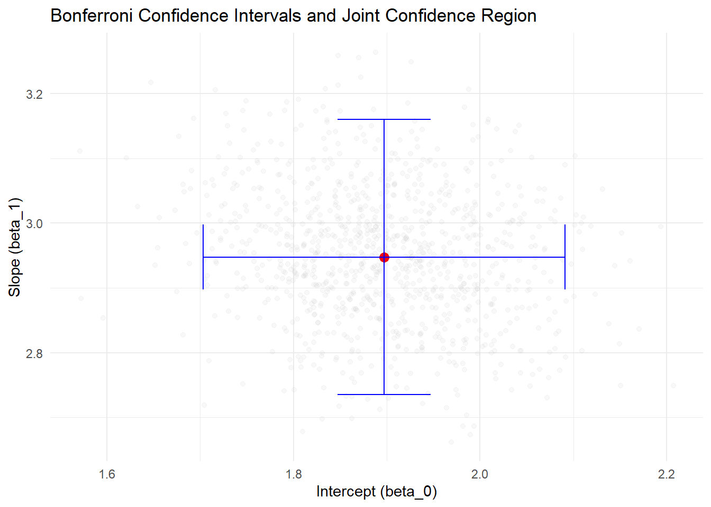
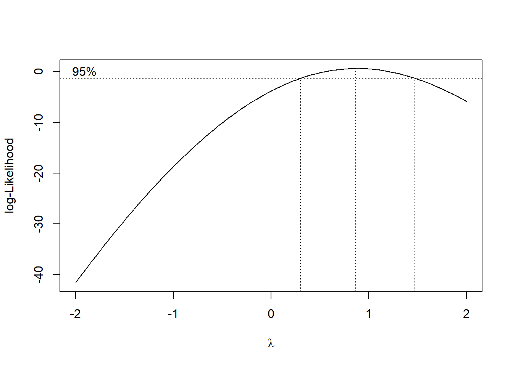
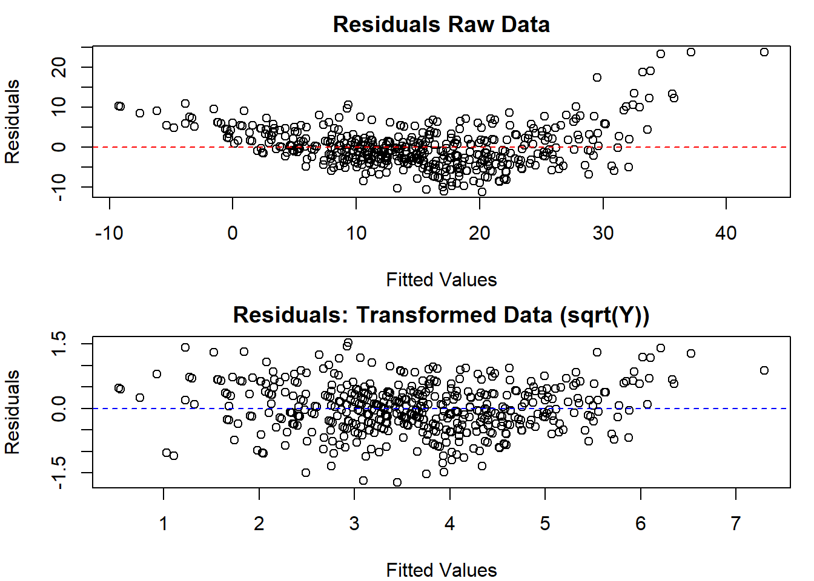
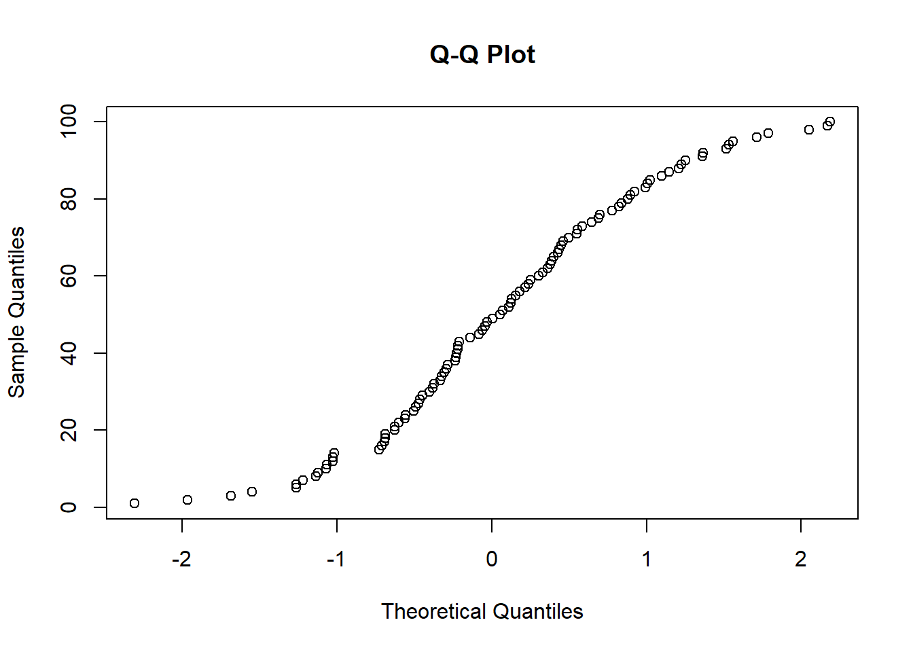
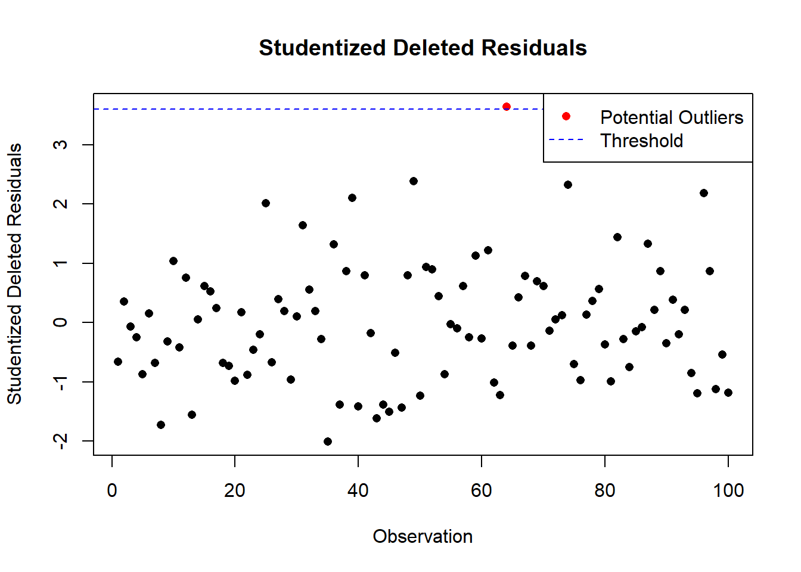
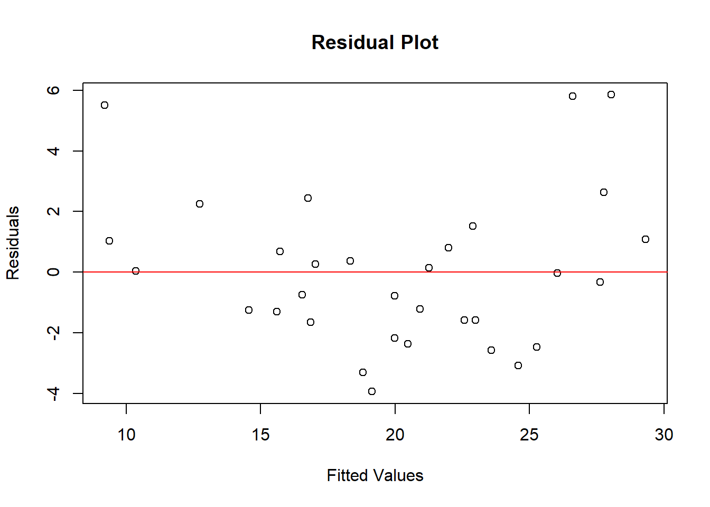
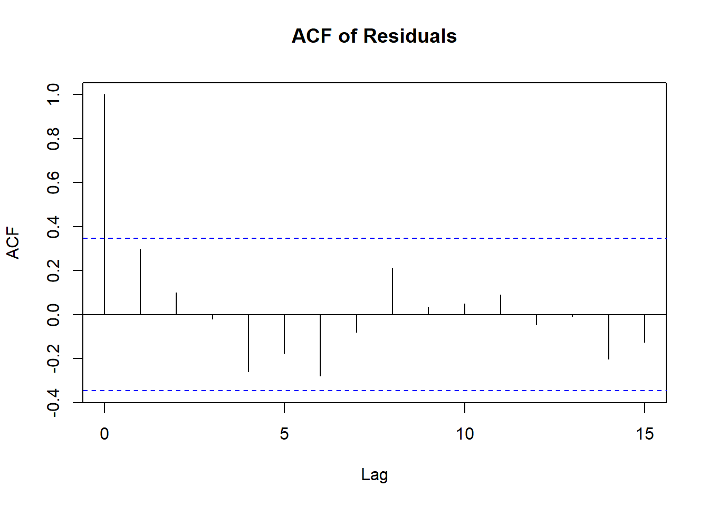
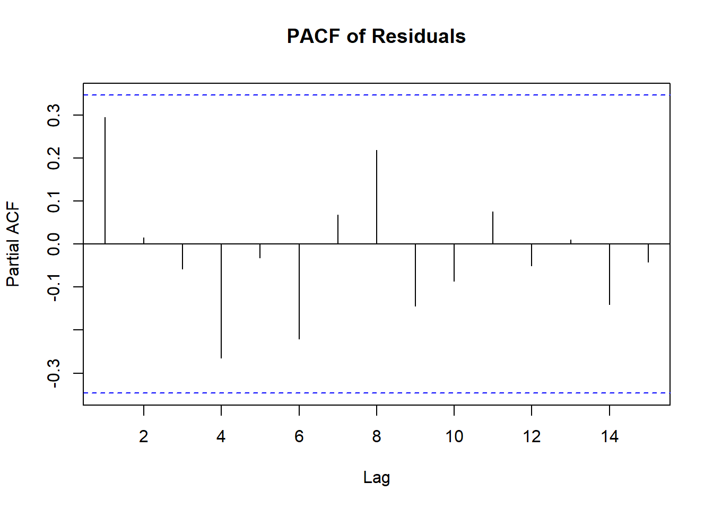
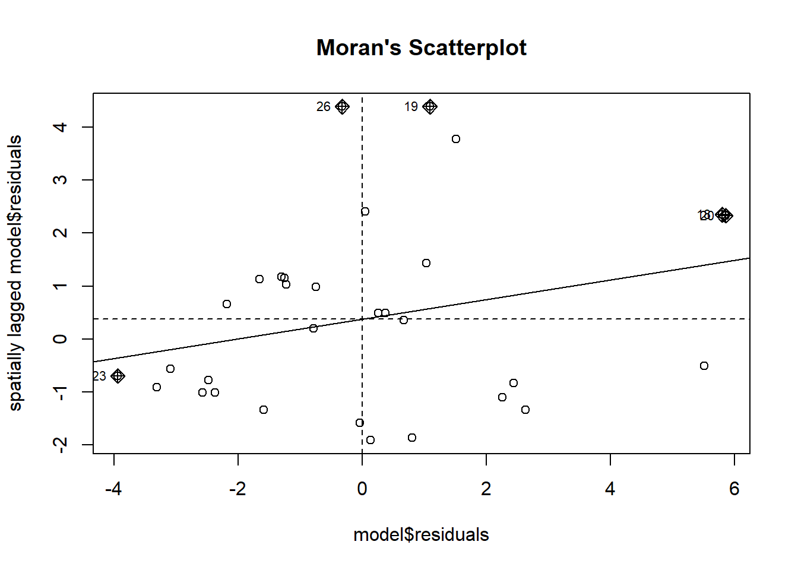

5.1 Ordinary Least Squares
Ordinary Least Squares (OLS) is the backbone of statistical modeling, a method so foundational that it often serves as the starting point for understanding data relationships. Whether predicting sales, estimating economic trends, or uncovering patterns in scientific research, OLS remains a critical tool. Its appeal lies in simplicity: OLS models the relationship between a dependent variable and one or more predictors by minimizing the squared differences between observed and predicted values.
Why OLS Works: Linear and Nonlinear Relationships
OLS rests on the Conditional Expectation Function (CEF), \(E[Y | X]\), which describes the expected value of \(Y\) given \(X\). Regression shines in two key scenarios:
Perfect Fit (Linear CEF):
If \(E[Y_i | X_{1i}, \dots, X_{Ki}] = a + \sum_{k=1}^K b_k X_{ki}\), the regression of \(Y_i\) on \(X_{1i}, \dots, X_{Ki}\) exactly equals the CEF. In other words, the regression gives the true average relationship between \(Y\) and \(X\).
If the true relationship is linear, regression delivers the exact CEF. For instance, imagine you’re estimating the relationship between advertising spend and sales revenue. If the true impact is linear, OLS will perfectly capture it.Approximation (Nonlinear CEF):
If \(E[Y_i | X_{1i}, \dots, X_{Ki}]\) is nonlinear, OLS provides the best linear approximation to this relationship. Specifically, it minimizes the expected squared deviation between the linear regression line and the nonlinear CEF.
For example, the effect of advertising diminishes at higher spending levels? OLS still works, providing the best linear approximation to this nonlinear relationship by minimizing the squared deviations between predictions and the true (but unknown) CEF.
In other words, regression is not just a tool for “linear” relationships—it’s a workhorse that adapts remarkably well to messy, real-world data.

5.1.1 Simple Regression (Basic) Model
The simplest form of regression is a straight line:
\[ Y_i = \beta_0 + \beta_1 X_i + \epsilon_i \]
where
- \(Y_i\): The dependent variable or outcome we’re trying to predict (e.g., sales, temperature).
- \(X_i\): The independent variable or predictor (e.g., advertising spend, time).
- \(\beta_0\): The intercept—where the line crosses the \(Y\)-axis when \(X = 0\).
- \(\beta_1\): The slope, representing the change in \(Y\) for a one-unit increase in \(X\).
- \(\epsilon_i\): The error term, accounting for random factors that \(X\) cannot explain.
Assumptions About the Error Term (\(\epsilon_i\)):
\[ \begin{aligned} E(\epsilon_i) &= 0 \\ \text{Var}(\epsilon_i) &= \sigma^2 \\ \text{Cov}(\epsilon_i, \epsilon_j) &= 0 \quad \text{for all } i \neq j \end{aligned} \]
Since \(\epsilon_i\) is random, \(Y_i\) is also random:
\[ \begin{aligned} E(Y_i) &= E(\beta_0 + \beta_1 X_i + \epsilon_i) \\ &= \beta_0 + \beta_1 X_i \end{aligned} \]
\[ \begin{aligned} \text{Var}(Y_i) &= \text{Var}(\beta_0 + \beta_1 X_i + \epsilon_i) \\ &= \text{Var}(\epsilon_i) \\ &= \sigma^2 \end{aligned} \]
Since \(\text{Cov}(\epsilon_i, \epsilon_j) = 0\), the outcomes across observations are independent. Hence, \(Y_i\) and \(Y_j\) are uncorrelated as well, conditioned on the \(X\)’s.
5.1.1.1 Estimation in Ordinary Least Squares
The goal of OLS is to estimate the regression parameters (\(\beta_0\), \(\beta_1\)) that best describe the relationship between the dependent variable \(Y\) and the independent variable \(X\). To achieve this, we minimize the sum of squared deviations between observed values of \(Y_i\) and their expected values predicted by the model.
The deviation of an observed value \(Y_i\) from its expected value, based on the regression model, is:
\[ Y_i - E(Y_i) = Y_i - (\beta_0 + \beta_1 X_i). \]
This deviation represents the error in prediction for the \(i\)-th observation.
To ensure that the errors don’t cancel each other out and to prioritize larger deviations, we consider the squared deviations. The sum of squared deviations, denoted by \(Q\), is defined as:
\[ Q = \sum_{i=1}^{n} (Y_i - \beta_0 - \beta_1 X_i)^2. \]
The goal of OLS is to find the values of \(\beta_0\) and \(\beta_1\) that minimize \(Q\). These values are called the OLS estimators.
To minimize \(Q\), we take partial derivatives with respect to \(\beta_0\) and \(\beta_1\), set them to zero, and solve the resulting system of equations. After simplifying, the estimators for the slope (\(b_1\)) and intercept (\(b_0\)) are obtained as follows:
Slope (\(b_1\)):
\[ b_1 = \frac{\sum_{i=1}^{n} (X_i - \bar{X})(Y_i - \bar{Y})}{\sum_{i=1}^{n} (X_i - \bar{X})^2}. \]
Here, \(\bar{X}\) and \(\bar{Y}\) represent the means of \(X\) and \(Y\), respectively. This formula reveals that the slope is proportional to the covariance between \(X\) and \(Y\), scaled by the variance of \(X\).
Intercept (\(b_0\)):
\[ b_0 = \frac{1}{n} \left( \sum_{i=1}^{n} Y_i - b_1 \sum_{i=1}^{n} X_i \right) = \bar{Y} - b_1 \bar{X}. \]
The intercept is determined by aligning the regression line with the center of the data.
Intuition Behind the Estimators
\(b_1\) (Slope): This measures the average change in \(Y\) for a one-unit increase in \(X\). The formula uses deviations from the mean to ensure that the relationship captures the joint variability of \(X\) and \(Y\).
\(b_0\) (Intercept): This ensures that the regression line passes through the mean of the data points \((\bar{X}, \bar{Y})\), anchoring the model in the center of the observed data.
Equivalently, we can also write these parameters in terms of covariances.
The covariance between two variables is defined as:
\[ \text{Cov}(X_i, Y_i) = E[(X_i - E[X_i])(Y_i - E[Y_i])] \]
Properties of Covariance:
- \(\text{Cov}(X_i, X_i) = \sigma^2_X\)
- If \(E(X_i) = 0\) or \(E(Y_i) = 0\), then \(\text{Cov}(X_i, Y_i) = E[X_i Y_i]\)
- For \(W_i = a + b X_i\) and \(Z_i = c + d Y_i\),
\(\text{Cov}(W_i, Z_i) = bd \cdot \text{Cov}(X_i, Y_i)\)
For a bivariate regression, the slope \(\beta\) in a bivariate regression is given by:
\[ \beta = \frac{\text{Cov}(Y_i, X_i)}{\text{Var}(X_i)} \]
For a multivariate case, the slope for \(X_k\) is:
\[ \beta_k = \frac{\text{Cov}(Y_i, \tilde{X}_{ki})}{\text{Var}(\tilde{X}_{ki})} \]
Where \(\tilde{X}_{ki}\) represents the residual from a regression of \(X_{ki}\) on the \(K-1\) other covariates in the model.
The intercept is:
\[ \beta_0 = E[Y_i] - \beta_1 E(X_i) \]
Note:
- OLS does not require the assumption of a specific distribution for the variables. Its robustness is based on the minimization of squared errors (i.e., no distributional assumptions).
5.1.1.2 Properties of Least Squares Estimators
The properties of the Ordinary Least Squares estimators (\(b_0\) and \(b_1\)) are derived based on their statistical behavior. These properties provide insights into the accuracy, variability, and reliability of the estimates.
5.1.1.2.1 Expectation of the OLS Estimators
The OLS estimators \(b_0\) (intercept) and \(b_1\) (slope) are unbiased. This means their expected values equal the true population parameters:
\[ \begin{aligned} E(b_1) &= \beta_1, \\ E(b_0) &= E(\bar{Y}) - \bar{X}\beta_1. \end{aligned} \]
Since the expected value of the sample mean of \(Y\), \(E(\bar{Y})\), is:
\[ E(\bar{Y}) = \beta_0 + \beta_1 \bar{X}, \]
the expected value of \(b_0\) simplifies to:
\[ E(b_0) = \beta_0. \]
Thus, \(b_0\) and \(b_1\) are unbiased estimators of their respective population parameters \(\beta_0\) and \(\beta_1\).
5.1.1.2.2 Variance of the OLS Estimators
The variability of the OLS estimators depends on the spread of the predictor variable \(X\) and the error variance \(\sigma^2\). The variances are given by:
Variance of \(b_1\) (Slope):
\[ \text{Var}(b_1) = \frac{\sigma^2}{\sum_{i=1}^{n} (X_i - \bar{X})^2}. \]
Variance of \(b_0\) (Intercept):
\[ \text{Var}(b_0) = \sigma^2 \left( \frac{1}{n} + \frac{\bar{X}^2}{\sum_{i=1}^{n} (X_i - \bar{X})^2} \right). \]
These formulas highlight that:
- \(\text{Var}(b_1) \to 0\) as the number of observations increases, provided \(X_i\) values are distributed around their mean \(\bar{X}\).
- \(\text{Var}(b_0) \to 0\) as \(n\) increases, assuming \(X_i\) values are appropriately selected (i.e., not all clustered near the mean).
5.1.1.3 Mean Square Error (MSE)
The Mean Square Error (MSE) quantifies the average squared residual (error) in the model:
\[ MSE = \frac{SSE}{n-2} = \frac{\sum_{i=1}^{n} e_i^2}{n-2} = \frac{\sum_{i=1}^{n} (Y_i - \hat{Y}_i)^2}{n-2}, \]
where \(SSE\) is the Sum of Squared Errors and \(n-2\) represents the degrees of freedom for a simple linear regression model (two parameters estimated: \(\beta_0\) and \(\beta_1\)).
The expected value of the MSE equals the error variance (i.e., unbiased Estimator of MSE:):
\[ E(MSE) = \sigma^2. \]
5.1.1.4 Estimating Variance of the OLS Coefficients
The sample-based estimates of the variances of \(b_0\) and \(b_1\) are expressed as follows:
Estimated Variance of \(b_1\) (Slope):
\[ s^2(b_1) = \widehat{\text{Var}}(b_1) = \frac{MSE}{\sum_{i=1}^{n} (X_i - \bar{X})^2}. \]
Estimated Variance of \(b_0\) (Intercept):
\[ s^2(b_0) = \widehat{\text{Var}}(b_0) = MSE \left( \frac{1}{n} + \frac{\bar{X}^2}{\sum_{i=1}^{n} (X_i - \bar{X})^2} \right). \]
These estimates rely on the MSE to approximate \(\sigma^2\).
The variance estimates are unbiased:
\[ \begin{aligned} E(s^2(b_1)) &= \text{Var}(b_1), \\ E(s^2(b_0)) &= \text{Var}(b_0). \end{aligned} \]
Implications of These Properties
- Unbiasedness: The unbiased nature of \(b_0\) and \(b_1\) ensures that, on average, the regression model accurately reflects the true relationship in the population.
- Decreasing Variance: As the sample size \(n\) increases or as the spread of \(X_i\) values grows, the variances of \(b_0\) and \(b_1\) decrease, leading to more precise estimates.
- Error Estimation with MSE: MSE provides a reliable estimate of the error variance \(\sigma^2\), which feeds directly into assessing the reliability of \(b_0\) and \(b_1\).
5.1.1.5 Residuals in Ordinary Least Squares
Residuals are the differences between observed values (\(Y_i\)) and their predicted counterparts (\(\hat{Y}_i\)). They play a central role in assessing model fit and ensuring the assumptions of OLS are met.
The residual for the \(i\)-th observation is defined as:
\[ e_i = Y_i - \hat{Y}_i = Y_i - (b_0 + b_1 X_i), \]
where:
- \(e_i\): Residual for the \(i\)-th observation.
- \(\hat{Y}_i\): Predicted value based on the regression model.
- \(Y_i\): Actual observed value.
Residuals estimate the unobservable error terms \(\epsilon_i\):
- \(e_i\) is an estimate of \(\epsilon_i = Y_i - E(Y_i)\).
- \(\epsilon_i\) is always unknown because we do not know the true values of \(\beta_0\) and \(\beta_1\).
5.1.1.5.1 Key Properties of Residuals
Residuals exhibit several mathematical properties that align with the OLS estimation process:
Sum of Residuals:
The residuals sum to zero:\[ \sum_{i=1}^{n} e_i = 0. \]
This ensures that the regression line passes through the centroid of the data, \((\bar{X}, \bar{Y})\).
Orthogonality of Residuals to Predictors:
The residuals are orthogonal (uncorrelated) to the predictor variable \(X\):\[ \sum_{i=1}^{n} X_i e_i = 0. \]
This reflects the fact that the OLS minimizes the squared deviations of residuals along the \(Y\)-axis, not the \(X\)-axis.
5.1.1.5.2 Expected Values of Residuals
The expected values of residuals reinforce the unbiased nature of OLS:
Mean of Residuals:
The residuals have an expected value of zero:\[ E[e_i] = 0. \]
Orthogonality to Predictors and Fitted Values:
Residuals are uncorrelated with both the predictor variables and the fitted values:\[ \begin{aligned} E[X_i e_i] &= 0, \\ E[\hat{Y}_i e_i] &= 0. \end{aligned} \]
These properties highlight that residuals do not contain systematic information about the predictors or the fitted values, reinforcing the idea that the model has captured the underlying relationship effectively.
5.1.1.5.3 Practical Importance of Residuals
Model Diagnostics:
Residuals are analyzed to check the assumptions of OLS, including linearity, homoscedasticity (constant variance), and independence of errors. Patterns in residual plots can signal issues such as nonlinearity or heteroscedasticity.Goodness-of-Fit:
The sum of squared residuals, \(\sum e_i^2\), measures the total unexplained variation in \(Y\). A smaller sum indicates a better fit.Influence Analysis:
Large residuals may indicate outliers or influential points that disproportionately affect the regression line.
5.1.1.6 Inference in Ordinary Least Squares
Inference allows us to make probabilistic statements about the regression parameters (\(\beta_0\), \(\beta_1\)) and predictions (\(Y_h\)). To perform valid inference, certain assumptions about the distribution of errors are necessary.
Normality Assumption
- OLS estimation itself does not require the assumption of normality.
- However, to conduct hypothesis tests or construct confidence intervals for \(\beta_0\), \(\beta_1\), and predictions, distributional assumptions are necessary.
- Inference on \(\beta_0\) and \(\beta_1\) is robust to moderate departures from normality, especially in large samples due to the Central Limit Theorem.
- Inference on predicted values, \(Y_{pred}\), is more sensitive to normality violations.
When we assume a normal error model, the response variable \(Y_i\) is modeled as:
\[ Y_i \sim N(\beta_0 + \beta_1 X_i, \sigma^2), \]
where:
- \(\beta_0 + \beta_1 X_i\): Mean response
- \(\sigma^2\): Variance of the errors
Under this model, the sampling distributions of the OLS estimators, \(b_0\) and \(b_1\), can be derived.
5.1.1.6.1 Inference for \(\beta_1\) (Slope)
Under the normal error model:
Sampling Distribution of \(b_1\):
\[ b_1 \sim N\left(\beta_1, \frac{\sigma^2}{\sum_{i=1}^{n} (X_i - \bar{X})^2}\right). \]
This indicates that \(b_1\) is an unbiased estimator of \(\beta_1\) with variance proportional to \(\sigma^2\).
Test Statistic:
\[ t = \frac{b_1 - \beta_1}{s(b_1)} \sim t_{n-2}, \]
where \(s(b_1)\) is the standard error of \(b_1\): \[ s(b_1) = \sqrt{\frac{MSE}{\sum_{i=1}^{n} (X_i - \bar{X})^2}}. \]
Confidence Interval:
A \((1-\alpha) 100\%\) confidence interval for \(\beta_1\) is:
\[ b_1 \pm t_{1-\alpha/2; n-2} \cdot s(b_1). \]
5.1.1.6.2 Inference for \(\beta_0\) (Intercept)
Sampling Distribution of \(b_0\):
Under the normal error model, the sampling distribution of \(b_0\) is:
\[ b_0 \sim N\left(\beta_0, \sigma^2 \left(\frac{1}{n} + \frac{\bar{X}^2}{\sum_{i=1}^{n} (X_i - \bar{X})^2}\right)\right). \]
Test Statistic:
\[ t = \frac{b_0 - \beta_0}{s(b_0)} \sim t_{n-2}, \]
where \(s(b_0)\) is the standard error of \(b_0\): \[ s(b_0) = \sqrt{MSE \left(\frac{1}{n} + \frac{\bar{X}^2}{\sum_{i=1}^{n} (X_i - \bar{X})^2}\right)}. \]
Confidence Interval:
A \((1-\alpha) 100\%\) confidence interval for \(\beta_0\) is:
\[ b_0 \pm t_{1-\alpha/2; n-2} \cdot s(b_0). \]
5.1.1.6.3 Mean Response
In regression, we often estimate the mean response of the dependent variable \(Y\) for a given level of the predictor variable \(X\), denoted as \(X_h\). This estimation provides a predicted average outcome for a specific value of \(X\) based on the fitted regression model.
- Let \(X_h\) represent the level of \(X\) for which we want to estimate the mean response.
- The mean response when \(X = X_h\) is denoted as \(E(Y_h)\).
- A point estimator for \(E(Y_h)\) is \(\hat{Y}_h\), which is the predicted value from the regression model:
\[ \hat{Y}_h = b_0 + b_1 X_h. \]
The estimator \(\hat{Y}_h\) is unbiased because its expected value equals the true mean response \(E(Y_h)\):
\[ \begin{aligned} E(\hat{Y}_h) &= E(b_0 + b_1 X_h) \\ &= \beta_0 + \beta_1 X_h \\ &= E(Y_h). \end{aligned} \]
Thus, \(\hat{Y}_h\) provides a reliable estimate of the mean response at \(X_h\).
The variance of \(\hat{Y}_h\) reflects the uncertainty in the estimate of the mean response:
\[ \begin{aligned} \text{Var}(\hat{Y}_h) &= \text{Var}(b_0 + b_1 X_h) \quad\text{(definition of }\hat{Y}_h\text{)}\\[6pt]&= \text{Var}\left((\bar{Y} - b_1 \bar{X}) + b_1 X_h\right)\quad\text{(since } b_0 = \bar{Y} - b_1 \bar{X}\text{)}\\[6pt]&= \text{Var}\left(\bar{Y} + b_1(X_h - \bar{X})\right)\quad\text{(factor out } b_1\text{)}\\[6pt]&= \text{Var}\left(\bar{Y} + b_1 (X_h - \bar{X}) \right) \\ &= \text{Var}(\bar{Y}) + (X_h - \bar{X})^2 \text{Var}(b_1) + 2(X_h - \bar{X}) \text{Cov}(\bar{Y}, b_1). \end{aligned} \]
Since \(\text{Cov}(\bar{Y}, b_1) = 0\) (due to the independence of the errors, \(\epsilon_i\)), the variance simplifies to:
\[ \text{Var}(\hat{Y}_h) = \frac{\sigma^2}{n} + (X_h - \bar{X})^2 \frac{\sigma^2}{\sum_{i=1}^{n} (X_i - \bar{X})^2}. \]
This can also be expressed as:
\[ \text{Var}(\hat{Y}_h) = \sigma^2 \left( \frac{1}{n} + \frac{(X_h - \bar{X})^2}{\sum_{i=1}^{n} (X_i - \bar{X})^2} \right). \]
To estimate the variance of \(\hat{Y}_h\), we replace \(\sigma^2\) with \(MSE\), the mean squared error from the regression:
\[ s^2(\hat{Y}_h) = MSE \left( \frac{1}{n} + \frac{(X_h - \bar{X})^2}{\sum_{i=1}^{n} (X_i - \bar{X})^2} \right). \]
Under the normal error model, the sampling distribution of \(\hat{Y}_h\) is:
\[ \begin{aligned} \hat{Y}_h &\sim N\left(E(Y_h), \text{Var}(\hat{Y}_h)\right), \\ \frac{\hat{Y}_h - E(Y_h)}{s(\hat{Y}_h)} &\sim t_{n-2}. \end{aligned} \]
This result follows because \(\hat{Y}_h\) is a linear combination of normally distributed random variables, and its variance is estimated using \(s^2(\hat{Y}_h)\).
A \(100(1-\alpha)\%\) confidence interval for the mean response \(E(Y_h)\) is given by:
\[ \hat{Y}_h \pm t_{1-\alpha/2; n-2} \cdot s(\hat{Y}_h), \]
where:
- \(\hat{Y}_h\): Point estimate of the mean response,
- \(s(\hat{Y}_h)\): Estimated standard error of the mean response,
- \(t_{1-\alpha/2; n-2}\): Critical value from the \(t\)-distribution with \(n-2\) degrees of freedom.
5.1.1.6.4 Prediction of a New Observation
When analyzing regression results, it is important to distinguish between:
- Estimating the mean response at a particular value of \(X\).
- Predicting an individual outcome for a particular value of \(X\).
Mean Response vs. Individual Outcome
Same Point Estimate
The formula for both the estimated mean response and the predicted individual outcome at \(X = X_h\) is identical:
\[ \hat{Y}_{pred} = \hat{Y}_h = b_0 + b_1 X_h. \]Different Variance
Although the point estimates are the same, the level of uncertainty differs. When predicting an individual outcome, we must consider not only the uncertainty in estimating the mean response (\(\hat{Y}_h\)) but also the additional random variation within the distribution of \(Y\).
Therefore, prediction intervals (for individual outcomes) account for more uncertainty and are consequently wider than confidence intervals (for the mean response).
To predict an individual outcome for a given \(X_h\), we combine the mean response with the random error:
\[ Y_{pred} = \beta_0 + \beta_1 X_h + \epsilon. \]
Using the least squares predictor:
\[ \hat{Y}_{pred} = b_0 + b_1 X_h, \]
since \(E(\epsilon) = 0\).
The variance of the predicted value for a new observation, \(Y_{pred}\), includes both:
- Variance of the estimated mean response: \[ \sigma^2 \left( \frac{1}{n} + \frac{(X_h - \bar{X})^2}{\sum_{i=1}^{n} (X_i - \bar{X})^2} \right), \]
- Variance of the error term, \(\epsilon\), which is \(\sigma^2\).
Thus, the total variance is:
\[ \begin{aligned} \text{Var}(Y_{pred}) &= \text{Var}(b_0 + b_1 X_h + \epsilon) \\ &= \text{Var}(b_0 + b_1 X_h) + \text{Var}(\epsilon) \\ &= \sigma^2 \left( \frac{1}{n} + \frac{(X_h - \bar{X})^2}{\sum_{i=1}^{n} (X_i - \bar{X})^2} \right) + \sigma^2 \\ &= \sigma^2 \left( 1 + \frac{1}{n} + \frac{(X_h - \bar{X})^2}{\sum_{i=1}^{n} (X_i - \bar{X})^2} \right). \end{aligned} \]
We estimate the variance of the prediction using \(MSE\), the mean squared error:
\[ s^2(pred) = MSE \left( 1 + \frac{1}{n} + \frac{(X_h - \bar{X})^2}{\sum_{i=1}^{n} (X_i - \bar{X})^2} \right). \]
Under the normal error model, the standardized predicted value follows a \(t\)-distribution with \(n-2\) degrees of freedom:
\[ \frac{Y_{pred} - \hat{Y}_h}{s(pred)} \sim t_{n-2}. \]
A \(100(1-\alpha)\%\) prediction interval for \(Y_{pred}\) is:
\[ \hat{Y}_{pred} \pm t_{1-\alpha/2; n-2} \cdot s(pred). \]
5.1.1.6.5 Confidence Band
In regression analysis, we often want to evaluate the uncertainty around the entire regression line, not just at a single value of the predictor variable \(X\). This is achieved using a confidence band, which provides a confidence interval for the mean response, \(E(Y) = \beta_0 + \beta_1 X\), over the entire range of \(X\) values.
The Working-Hotelling confidence band is a method to construct simultaneous confidence intervals for the regression line. For a given \(X_h\), the confidence band is expressed as:
\[ \hat{Y}_h \pm W s(\hat{Y}_h), \]
where:
\(W^2 = 2F_{1-\alpha; 2, n-2}\),
- \(F_{1-\alpha; 2, n-2}\) is the critical value from the \(F\)-distribution with 2 and \(n-2\) degrees of freedom.
\(s(\hat{Y}_h)\) is the standard error of the estimated mean response at \(X_h\):
\[ s^2(\hat{Y}_h) = MSE \left( \frac{1}{n} + \frac{(X_h - \bar{X})^2}{\sum_{i=1}^{n} (X_i - \bar{X})^2} \right). \]
Key Properties of the Confidence Band
- Width of the Interval:
- The width of the confidence band changes with \(X_h\) because \(s(\hat{Y}_h)\) depends on how far \(X_h\) is from the mean of \(X\) (\(\bar{X}\)).
- The interval is narrowest at \(X = \bar{X}\), where the variance of the estimated mean response is minimized.
- Shape of the Band:
- The boundaries of the confidence band form a hyperbolic shape around the regression line.
- This reflects the increasing uncertainty in the mean response as \(X_h\) moves farther from \(\bar{X}\).
- Simultaneous Coverage:
- The Working-Hotelling band ensures that the true regression line \(E(Y) = \beta_0 + \beta_1 X\) lies within the band across all values of \(X\) with a specified confidence level (e.g., \(95\%\)).
5.1.1.7 Analysis of Variance (ANOVA) in Regression
ANOVA in regression decomposes the total variability in the response variable (\(Y\)) into components attributed to the regression model and residual error. In the context of regression, ANOVA provides a mechanism to assess the fit of the model and test hypotheses about the relationship between \(X\) and \(Y\).
The corrected Total Sum of Squares (SSTO) quantifies the total variation in \(Y\):
\[ SSTO = \sum_{i=1}^n (Y_i - \bar{Y})^2, \]
where \(\bar{Y}\) is the mean of the response variable. The term “corrected” refers to the fact that the sum of squares is calculated relative to the mean (i.e., the uncorrected total sum of squares is given by \(\sum Y_i^2\))
Using the fitted regression model \(\hat{Y}_i = b_0 + b_1 X_i\), we estimate the conditional mean of \(Y\) at \(X_i\). The total sum of squares can be decomposed as:
\[ \begin{aligned} \sum_{i=1}^n (Y_i - \bar{Y})^2 &= \sum_{i=1}^n (Y_i - \hat{Y}_i + \hat{Y}_i - \bar{Y})^2 \\ &= \sum_{i=1}^n (Y_i - \hat{Y}_i)^2 + \sum_{i=1}^n (\hat{Y}_i - \bar{Y})^2 + 2 \sum_{i=1}^n (Y_i - \hat{Y}_i)(\hat{Y}_i - \bar{Y}) \\ &= \sum_{i=1}^n (Y_i - \hat{Y}_i)^2 + \sum_{i=1}^n (\hat{Y}_i - \bar{Y})^2 \end{aligned} \]
- The cross-product term is zero, as shown below.
- This decomposition simplifies to:
\[ SSTO = SSE + SSR, \]
where:
\(SSE = \sum_{i=1}^n (Y_i - \hat{Y}_i)^2\): Error Sum of Squares (variation unexplained by the model).
\(SSR = \sum_{i=1}^n (\hat{Y}_i - \bar{Y})^2\): Regression Sum of Squares (variation explained by the model), which measure how the conditional mean varies about a central value.
Degrees of freedom are partitioned as:
\[ \begin{aligned} SSTO &= SSR + SSE \\ (n-1) &= (1) + (n-2) \\ \end{aligned} \]
To confirm that the cross-product term is zero:
\[ \begin{aligned} \sum_{i=1}^n (Y_i - \hat{Y}_i)(\hat{Y}_i - \bar{Y}) &= \sum_{i=1}^{n}(Y_i - \bar{Y} -b_1 (X_i - \bar{X}))(\bar{Y} + b_1 (X_i - \bar{X})-\bar{Y}) \quad \text{(Expand } Y_i - \hat{Y}_i \text{ and } \hat{Y}_i - \bar{Y}\text{)} \\ &=\sum_{i=1}^{n}(Y_i - \bar{Y} -b_1 (X_i - \bar{X}))( b_1 (X_i - \bar{X})) \\ &= b_1 \sum_{i=1}^n (Y_i - \bar{Y})(X_i - \bar{X}) - b_1^2 \sum_{i=1}^n (X_i - \bar{X})^2 \quad \text{(Distribute terms in the product)} \\ &= b_1 \frac{\sum_{i=1}^n (Y_i - \bar{Y})(X_i - \bar{X})}{\sum_{i=1}^n (X_i - \bar{X})^2} \sum_{i=1}^n (X_i - \bar{X})^2 - b_1^2 \sum_{i=1}^n (X_i - \bar{X})^2 \quad \text{(Substitute } b_1 \text{ definition)} \\ &= b_1^2 \sum_{i=1}^n (X_i - \bar{X})^2 - b_1^2 \sum_{i=1}^n (X_i - \bar{X})^2 \\ &= 0 \end{aligned} \]
The ANOVA table summarizes the partitioning of variability:
| Source of Variation | Sum of Squares | df | Mean Square | \(F\) Statistic |
|---|---|---|---|---|
| Regression (Model) | \(SSR\) | \(1\) | \(MSR = \frac{SSR}{1}\) | \(F = \frac{MSR}{MSE}\) |
| Error | \(SSE\) | \(n-2\) | \(MSE = \frac{SSE}{n-2}\) | |
| Total (Corrected) | \(SSTO\) | \(n-1\) |
The expected values of the mean squares are:
\[ \begin{aligned} E(MSE) &= \sigma^2, \\ E(MSR) &= \sigma^2 + \beta_1^2 \sum_{i=1}^n (X_i - \bar{X})^2. \end{aligned} \]
- If \(\beta_1 = 0\):
- The regression model does not explain any variation in \(Y\) beyond the mean, and \(E(MSR) = E(MSE) = \sigma^2\).
- This condition corresponds to the null hypothesis, \(H_0: \beta_1 = 0\).
- If \(\beta_1 \neq 0\):
- The regression model explains some variation in \(Y\), and \(E(MSR) > E(MSE)\).
- The additional term \(\beta_1^2 \sum_{i=1}^{n} (X_i - \bar{X})^2\) represents the variance explained by the predictor \(X\).
The difference between \(E(MSR)\) and \(E(MSE)\) allows us to infer whether \(\beta_1 \neq 0\) by comparing their ratio.
Assuming the errors \(\epsilon_i\) are independent and identically distributed as \(N(0, \sigma^2)\), and under the null hypothesis \(H_0: \beta_1 = 0\), we have:
The scaled \(MSE\) follows a chi-square distribution with \(n-2\) degrees of freedom:
\[ \frac{MSE}{\sigma^2} \sim \chi_{n-2}^2. \]
The scaled \(MSR\) follows a chi-square distribution with \(1\) degree of freedom:
\[ \frac{MSR}{\sigma^2} \sim \chi_{1}^2. \]
These two chi-square random variables are independent.
The ratio of two independent chi-square random variables, scaled by their respective degrees of freedom, follows an \(F\)-distribution. Therefore, under \(H_0\):
\[ F = \frac{MSR}{MSE} \sim F_{1, n-2}. \]
The \(F\)-statistic tests whether the regression model provides a significant improvement over the null model (constant \(E(Y)\)).
The hypotheses for the \(F\)-test are:
- Null Hypothesis (\(H_0\)): \(\beta_1 = 0\) (no relationship between \(X\) and \(Y\)).
- Alternative Hypothesis (\(H_a\)): \(\beta_1 \neq 0\) (a significant relationship exists between \(X\) and \(Y\)).
The rejection rule for \(H_0\) at significance level \(\alpha\) is:
\[ F > F_{1-\alpha;1,n-2}, \]
where \(F_{1-\alpha;1,n-2}\) is the critical value from the \(F\)-distribution with \(1\) and \(n-2\) degrees of freedom.
- If \(F \leq F_{1-\alpha;1,n-2}\):
- Fail to reject \(H_0\). There is insufficient evidence to conclude that \(X\) significantly explains variation in \(Y\).
- If \(F > F_{1-\alpha;1,n-2}\):
- Reject \(H_0\). There is significant evidence that \(X\) explains some of the variation in \(Y\).
5.1.1.8 Coefficient of Determination (\(R^2\))
The Coefficient of Determination (\(R^2\)) measures how well the linear regression model accounts for the variability in the response variable \(Y\). It is defined as:
\[ R^2 = \frac{SSR}{SSTO} = 1 - \frac{SSE}{SSTO}, \]
where:
- \(SSR\): Regression Sum of Squares (variation explained by the model).
- \(SSTO\): Total Sum of Squares (total variation in \(Y\) about its mean).
- \(SSE\): Error Sum of Squares (variation unexplained by the model).
Properties of \(R^2\)
Range: \[ 0 \leq R^2 \leq 1. \]
- \(R^2 = 0\): The model explains none of the variability in \(Y\) (e.g., \(\beta_1 = 0\)).
- \(R^2 = 1\): The model explains all the variability in \(Y\) (perfect fit).
Proportionate Reduction in Variance: \(R^2\) represents the proportionate reduction in the total variation of \(Y\) after fitting the model. It quantifies how much better the model predicts \(Y\) compared to simply using \(\bar{Y}\).
Potential Misinterpretation: It is not really correct to say \(R^2\) is the “variation in \(Y\) explained by \(X\).” The term “variation explained” assumes a causative or deterministic explanation, which is not always correct. For example:
\(R^2\) shows how much variance in \(Y\) is accounted for by the regression model, but it does not imply causation.
In cases with confounding variables or spurious correlations, \(R^2\) can still be high, even if there’s no direct causal link between \(X\) and \(Y\).
For simple linear regression, \(R^2\) is the square of the Pearson correlation coefficient, \(r\):
\[ R^2 = (r)^2, \]
where:
- \(r = \text{corr}(X, Y)\) is the sample correlation coefficient.
The relationship between \(b_1\) (the slope of the regression line) and \(r\) is given by:
\[ b_1 = \left(\frac{\sum_{i=1}^n (Y_i - \bar{Y})^2}{\sum_{i=1}^n (X_i - \bar{X})^2}\right)^{1/2}. \]
Additionally, \(r\) can be expressed as:
\[ r = \frac{s_y}{s_x} \cdot r, \]
where \(s_y\) and \(s_x\) are the sample standard deviations of \(Y\) and \(X\), respectively.
5.1.1.9 Lack of Fit in Regression
The lack of fit test evaluates whether the chosen regression model adequately captures the relationship between the predictor variable \(X\) and the response variable \(Y\). When there are repeated observations at specific values of \(X\), we can partition the Error Sum of Squares (\(SSE\)) into two components:
- Pure Error
- Lack of Fit.
Given the observations:
- \(Y_{ij}\): The \(j\)-th replicate for the \(i\)-th distinct value of \(X\),
- \(Y_{11}, Y_{21}, \dots, Y_{n_1, 1}\): \(n_1\) repeated observations of \(X_1\)
- \(Y_{1c}, Y_{2c}, \dots, Y_{n_c,c}\): \(n_c\) repeated observations of \(X_c\)
- \(\bar{Y}_j\): The mean response for replicates at \(X_j\),
- \(\hat{Y}_{ij}\): The predicted value from the regression model for \(X_j\),
the Error Sum of Squares (\(SSE\)) can be decomposed as:
\[ \begin{aligned} \sum_{i} \sum_{j} (Y_{ij} - \hat{Y}_{ij})^2 &= \sum_{i} \sum_{j} (Y_{ij} - \bar{Y}_j + \bar{Y}_j - \hat{Y}_{ij})^2 \\ &= \sum_{i} \sum_{j} (Y_{ij} - \bar{Y}_j)^2 + \sum_{j} n_j (\bar{Y}_j - \hat{Y}_{ij})^2 + \text{cross product term} \\ &= \sum_{i} \sum_{j} (Y_{ij} - \bar{Y}_j)^2 + \sum_{j} n_j (\bar{Y}_j - \hat{Y}_{ij})^2 \end{aligned} \]
- The cross product term is zero because the deviations within replicates and the deviations between replicates are orthogonal.
- This simplifies to:
\[ SSE = SSPE + SSLF, \]
where:
- \(SSPE\) (Pure Error Sum of Squares): Variation within replicates for the same \(X_j\), reflecting natural variability in the response.
- Degrees of freedom: \(df_{pe} = n - c\), where \(n\) is the total number of observations, and \(c\) is the number of distinct \(X\) values.
- \(SSLF\) (Lack of Fit Sum of Squares): Variation between the replicate means \(\bar{Y}_j\) and the model-predicted values \(\hat{Y}_{ij}\). If SSLF is large, it suggests the model may not adequately describe the relationship between \(X\) and \(Y\).
- Degrees of freedom: \(df_{lf} = c - 2\), where 2 accounts for the parameters in the linear regression model (\(\beta_0\) and \(\beta_1\)).
Mean Square for Pure Error (MSPE):
\[ MSPE = \frac{SSPE}{df_{pe}} = \frac{SSPE}{n-c}. \]Mean Square for Lack of Fit (MSLF):
\[ MSLF = \frac{SSLF}{df_{lf}} = \frac{SSLF}{c-2}. \]
5.1.1.9.1 The F-Test for Lack of Fit
The F-test for lack of fit evaluates whether the chosen regression model adequately captures the relationship between the predictor variable \(X\) and the response variable \(Y\). Specifically, it tests whether any systematic deviations from the model exist that are not accounted for by random error.
Null Hypothesis (\(H_0\)):
The regression model is adequate: \[ H_0: Y_{ij} = \beta_0 + \beta_1 X_i + \epsilon_{ij}, \quad \epsilon_{ij} \sim \text{i.i.d. } N(0, \sigma^2). \]Alternative Hypothesis (\(H_a\)):
The regression model is not adequate and includes an additional function \(f(X_i, Z_1, \dots)\) to account for the lack of fit: \[ H_a: Y_{ij} = \alpha_0 + \alpha_1 X_i + f(X_i, Z_1, \dots) + \epsilon_{ij}^*, \quad \epsilon_{ij}^* \sim \text{i.i.d. } N(0, \sigma^2). \]
Expected Mean Squares
The expected Mean Square for Pure Error (MSPE) is the same under both \(H_0\) and \(H_a\):
\[ E(MSPE) = \sigma^2. \]
The expected Mean Square for Lack of Fit (MSLF) depends on whether \(H_0\) is true:
- Under \(H_0\) (model is adequate): \[ E(MSLF) = \sigma^2. \]
- Under \(H_a\) (model is not adequate): \[ E(MSLF) = \sigma^2 + \frac{\sum n_j f(X_i, Z_1, \dots)^2}{n-2}. \]
The test statistic for the lack-of-fit test is:
\[ F = \frac{MSLF}{MSPE}, \]
where:
- \(MSLF = \frac{SSLF}{c-2}\),
and \(SSLF\) is the Lack of Fit Sum of Squares. - \(MSPE = \frac{SSPE}{n-c}\),
and \(SSPE\) is the Pure Error Sum of Squares.
Under \(H_0\), the \(F\)-statistic follows an \(F\)-distribution:
\[ F \sim F_{c-2, n-c}. \]
Decision Rule
Reject \(H_0\) at significance level \(\alpha\) if: \[ F > F_{1-\alpha; c-2, n-c}. \]
Failing to reject \(H_0\):
- Indicates that there is no evidence of lack of fit.
- Does not imply the model is “true,” but it suggests that the model provides a reasonable approximation to the true relationship.
To summarize, when repeat observations exist at some levels of \(X\), the Error Sum of Squares (SSE) can be further partitioned into Lack of Fit (SSLF) and Pure Error (SSPE). This leads to an extended ANOVA table:
| Source of Variation | Sum of Squares | df | Mean Square | F Statistic |
|---|---|---|---|---|
| Regression | SSR | \(1\) | \(MSR = \frac{SSR}{1}\) | \(F = \frac{MSR}{MSE}\) |
| Error | SSE | \(n-2\) | \(MSE = \frac{SSE}{n-2}\) | |
| Lack of fit | SSLF | \(c-2\) | \(MSLF = \frac{SSLF}{c-2}\) | \(F = \frac{MSLF}{MSPE}\) |
| Pure Error | SSPE | \(n-c\) | \(MSPE = \frac{SSPE}{n-c}\) | |
| Total (Corrected) | SSTO | \(n-1\) |
Repeat observations have important implications for the coefficient of determination (\(R^2\)):
- \(R^2\) Can’t Attain 1 with Repeat Observations:
- With repeat observations, \(SSE\) (Error Sum of Squares) cannot be reduced to 0 because \(SSPE > 0\) (variability within replicates).
- Maximum \(R^2\):
The maximum attainable \(R^2\) in the presence of repeat observations is:
\[ R^2_{\text{max}} = \frac{SSTO - SSPE}{SSTO}. \]
- Importance of Repeat Observations:
- Not all levels of \(X\) need repeat observations, but their presence enables the separation of pure error from lack of fit, making the \(F\)-test for lack of fit possible.
Estimation of \(\sigma^2\) with Repeat Observations
- Use of MSE:
- When \(H_0\) is appropriate (the model fits well), \(MSE\) is typically used as the estimate of \(\sigma^2\) instead of \(MSPE\) because it has more degrees of freedom and provides a more reliable estimate.
- Pooling Estimates:
- In practice, \(MSE\) and \(MSPE\) may be pooled if \(H_0\) holds, resulting in a more precise estimate of \(\sigma^2\).
5.1.1.10 Joint Inference for Regression Parameters
Joint inference considers the simultaneous coverage of confidence intervals for multiple regression parameters, such as \(\beta_0\) (intercept) and \(\beta_1\) (slope). Ensuring adequate confidence for both parameters together requires adjustments to maintain the desired family-wise confidence level.
Let:
- \(\bar{A}_1\): The event that the confidence interval for \(\beta_0\) covers its true value.
- \(\bar{A}_2\): The event that the confidence interval for \(\beta_1\) covers its true value.
The individual confidence levels are:
\[ \begin{aligned} P(\bar{A}_1) &= 1 - \alpha, \\ P(\bar{A}_2) &= 1 - \alpha. \end{aligned} \]
The joint confidence coefficient, \(P(\bar{A}_1 \cap \bar{A}_2)\), is:
\[ \begin{aligned} P(\bar{A}_1 \cap \bar{A}_2) &= 1 - P(\bar{A}_1 \cup \bar{A}_2), \\ &= 1 - P(A_1) - P(A_2) + P(A_1 \cap A_2), \\ &\geq 1 - P(A_1) - P(A_2), \\ &= 1 - 2\alpha. \end{aligned} \]
This means that if \(\alpha\) is the significance level for each parameter, the joint confidence coefficient is at least \(1 - 2\alpha\). This inequality is known as the Bonferroni Inequality.
Bonferroni Confidence Intervals
To ensure a desired joint confidence level of \((1-\alpha)\) for both \(\beta_0\) and \(\beta_1\), the Bonferroni method adjusts the confidence level for each parameter by dividing \(\alpha\) by the number of parameters. For two parameters:
The confidence level for each parameter is \((1-\alpha/2)\).
The resulting Bonferroni-adjusted confidence intervals are:
\[ \begin{aligned} b_0 &\pm B \cdot s(b_0), \\ b_1 &\pm B \cdot s(b_1), \end{aligned} \]
where \(B = t_{1-\alpha/4; n-2}\) is the critical value from the \(t\)-distribution with \(n-2\) degrees of freedom.
Interpretation of Bonferroni Confidence Intervals
- Coverage Probability:
- If repeated samples were taken, \((1-\alpha)100\%\) of the joint intervals would contain the true values of \((\beta_0, \beta_1)\).
- This implies that \(\alpha \times 100\%\) of the samples would miss at least one of the true parameter values.
- Conservatism:
- The Bonferroni method ensures the family-wise confidence level but is conservative. The actual joint confidence level is often higher than \((1-\alpha)100\%\).
- This conservatism reduces statistical power.
# Load necessary libraries
library(ggplot2)
library(MASS)
# Set seed for reproducibility
set.seed(123)
# Generate synthetic data
n <- 100 # Number of observations
x <- rnorm(n, mean = 0, sd = 1) # Predictor
beta_0 <- 2 # True intercept
beta_1 <- 3 # True slope
sigma <- 1 # Standard deviation of error
y <-
beta_0 + beta_1 * x + rnorm(n, mean = 0, sd = sigma) # Response
# Fit linear model
model <- lm(y ~ x)
summary(model)
#>
#> Call:
#> lm(formula = y ~ x)
#>
#> Residuals:
#> Min 1Q Median 3Q Max
#> -1.9073 -0.6835 -0.0875 0.5806 3.2904
#>
#> Coefficients:
#> Estimate Std. Error t value Pr(>|t|)
#> (Intercept) 1.89720 0.09755 19.45 <2e-16 ***
#> x 2.94753 0.10688 27.58 <2e-16 ***
#> ---
#> Signif. codes: 0 '***' 0.001 '**' 0.01 '*' 0.05 '.' 0.1 ' ' 1
#>
#> Residual standard error: 0.9707 on 98 degrees of freedom
#> Multiple R-squared: 0.8859, Adjusted R-squared: 0.8847
#> F-statistic: 760.6 on 1 and 98 DF, p-value: < 2.2e-16
# Extract coefficients and standard errors
b0_hat <- coef(model)[1]
b1_hat <- coef(model)[2]
s_b0 <-
summary(model)$coefficients[1, 2] # Standard error of intercept
s_b1 <- summary(model)$coefficients[2, 2] # Standard error of slope
# Desired confidence level
alpha <- 0.05 # Overall significance level
# Bonferroni correction
adjusted_alpha <- alpha / 2 # Adjusted alpha for each parameter
# Critical t-value for Bonferroni adjustment
t_crit <-
qt(1 - adjusted_alpha, df = n - 2) # n-2 degrees of freedom
# Bonferroni confidence intervals
ci_b0 <- c(b0_hat - t_crit * s_b0, b0_hat + t_crit * s_b0)
ci_b1 <- c(b1_hat - t_crit * s_b1, b1_hat + t_crit * s_b1)
# Print results
cat("Bonferroni Confidence Intervals:\n")
#> Bonferroni Confidence Intervals:
cat("Intercept (beta_0): [",
round(ci_b0[1], 2),
",",
round(ci_b0[2], 2),
"]\n")
#> Intercept (beta_0): [ 1.7 , 2.09 ]
cat("Slope (beta_1): [",
round(ci_b1[1], 2),
",",
round(ci_b1[2], 2),
"]\n")
#> Slope (beta_1): [ 2.74 , 3.16 ]
# Calculate the covariance matrix of coefficients
cov_matrix <- vcov(model)
# Generate points for confidence ellipse
ellipse_points <-
MASS::mvrnorm(n = 1000,
mu = coef(model),
Sigma = cov_matrix)
# Convert to data frame for plotting
ellipse_df <- as.data.frame(ellipse_points)
colnames(ellipse_df) <- c("beta_0", "beta_1")
# Plot confidence intervals and ellipse
p <- ggplot() +
# Confidence ellipse
geom_point(
data = ellipse_df,
aes(x = beta_0, y = beta_1),
alpha = 0.1,
color = "grey"
) +
# Point estimate
geom_point(aes(x = b0_hat, y = b1_hat),
color = "red",
size = 3) +
# Bonferroni confidence intervals
geom_errorbar(aes(x = b0_hat, ymin = ci_b1[1], ymax = ci_b1[2]),
width = 0.1,
color = "blue") +
geom_errorbarh(aes(y = b1_hat, xmin = ci_b0[1], xmax = ci_b0[2]),
height = 0.1,
color = "blue") +
labs(title = "Bonferroni Confidence Intervals and Joint Confidence Region",
x = "Intercept (beta_0)",
y = "Slope (beta_1)") +
theme_minimal()
print(p)
- The red point represents the estimated coefficients (b0_hat, b1_hat).
- The blue lines represent the Bonferroni-adjusted confidence intervals for beta_0 and beta_1.
- The grey points represent the joint confidence region based on the covariance matrix of coefficients.
- The Bonferroni intervals ensure family-wise confidence level but are conservative.
- Simulation results demonstrate how often the true values are captured in the intervals when repeated samples are drawn.
Notes:
- Conservatism of Bonferroni Intervals
- The Bonferroni interval is conservative:
- The joint confidence level is a lower bound, ensuring family-wise coverage of at least \((1-\alpha)100\%\).
- This conservatism results in wider intervals, reducing the statistical power of the test.
- Adjustments for Conservatism:
- Practitioners often choose a larger \(\alpha\) (e.g., \(\alpha = 0.1\)) to reduce the width of the intervals in Bonferroni joint tests.
- A higher \(\alpha\) allows for a better balance between confidence and precision, especially for exploratory analyses.
- The Bonferroni interval is conservative:
- Extending Bonferroni to Multiple Parameters: The Bonferroni method is not limited to two parameters. For testing \(g\) parameters, such as \(\beta_0, \beta_1, \dots, \beta_{g-1}\):
- Adjusted Confidence Level for Each Parameter:
- The confidence level for each individual parameter is \((1-\alpha/g)\).
- Critical \(t\)-Value:
- For two-sided intervals, the critical value for each parameter is: \[ t_{1-\frac{\alpha}{2g}; n-p}, \] where \(p\) is the total number of parameters in the regression model.
- Example:
- If \(\alpha = 0.05\) and \(g = 10\), each individual confidence interval is constructed at the: \[ (1 - \frac{0.05}{10}) = 99.5\% \text{ confidence level}. \]
- This corresponds to using \(t_{1-\frac{0.005}{2}; n-p}\) in the formula for the confidence intervals.
- Adjusted Confidence Level for Each Parameter:
- Limitations for Large \(g\)
- Wide Intervals:
- As \(g\) increases, the intervals become excessively wide, often leading to reduced usefulness in practical applications.
- This issue stems from the conservatism of the Bonferroni method, which prioritizes family-wise error control.
- Suitability for Small \(g\):
- The Bonferroni procedure works well when \(g\) is relatively small (e.g., \(g \leq 5\)).
- For larger \(g\), alternative methods (discussed below) are more efficient.
- Wide Intervals:
- Correlation Between Parameters: Correlation of \(b_0\) and \(b_1\):
- The estimated regression coefficients \(b_0\) and \(b_1\) are often correlated:
- Negative correlation if \(\bar{X} > 0\).
- Positive correlation if \(\bar{X} < 0\).
- This correlation can complicate joint inference but does not affect the validity of Bonferroni-adjusted intervals.
- The estimated regression coefficients \(b_0\) and \(b_1\) are often correlated:
- Alternatives to Bonferroni
Several alternative procedures provide more precise joint inference, especially for larger \(g\):
- Scheffé’s Method:
- Constructs simultaneous confidence regions for all possible linear combinations of parameters.
- Suitable for exploratory analyses but may result in even wider intervals than Bonferroni.
- Tukey’s Honest Significant Difference:
- Designed for pairwise comparisons in ANOVA but can be adapted for regression parameters.
- Holm’s Step-Down Procedure:
- A sequential testing procedure that is less conservative than Bonferroni while still controlling the family-wise error rate.
- Likelihood Ratio Tests:
- Construct joint confidence regions based on the likelihood function, offering more precision for large \(g\).
5.1.1.11 Assumptions of Linear Regression
To ensure valid inference and reliable predictions in linear regression, the following assumptions must hold. We’ll cover them in depth in the next section.
| Assumption | Description |
|---|---|
| Linearity | Linear relationship between predictors and response. |
| Independence of Errors | Errors are independent (important in time-series/clustering). |
| Homoscedasticity | Constant variance of residuals across predictors. |
| Normality of Errors | Residuals are normally distributed. |
| No Multicollinearity | Predictors are not highly correlated. |
| No Outliers/Leverage Points | No undue influence from outliers or high-leverage points. |
| Exogeneity | Predictors are uncorrelated with the error term (no endogeneity). |
| Full Rank | Predictors are linearly independent (no perfect multicollinearity). |
5.1.1.12 Diagnostics for Model Assumptions
Constant Variance
- To check homoscedasticity:
- Plot residuals vs. fitted values or residuals vs. predictors.
- Look for patterns or a funnel-shaped spread indicating heteroscedasticity.
Outliers
- Detect outliers using:
- Residuals vs. predictors plot.
- Box plots.
- Stem-and-leaf plots.
- Scatter plots.
Standardized Residuals:
Residuals can be standardized to have unit variance, known as studentized residuals: \[ r_i = \frac{e_i}{s(e_i)}. \]
Semi-Studentized Residuals:
A simplified standardization using the mean squared error (MSE): \[ e_i^* = \frac{e_i}{\sqrt{MSE}}. \]
Non-Independent Error Terms
- To detect non-independence:
- Plot residuals vs. time for time-series data.
- Residuals \(e_i\) are not independent because they depend on \(\hat{Y}_i\), which is derived from the same regression function.
- Detect dependency by plotting the residual for the \(i\)-th response vs. the \((i-1)\)-th.
Non-Normality of Error Terms
- To assess normality:
- Plot distribution of residuals.
- Create box plots, stem-and-leaf plots, or normal probability plots.
- Issues such as an incorrect regression function or non-constant error variance can distort the residual distribution.
- Normality tests require relatively large sample sizes to detect deviations.
Normality of Residuals
- Use tests based on the empirical cumulative distribution function (ECDF) (check Normality Assessment)
Constancy of Error Variance
- Statistical tests for homoscedasticity:
- Brown-Forsythe Test (Modified Levene Test):
- Robust against non-normality, examines the variance of residuals across levels of predictors.
- Breusch-Pagan Test (Cook-Weisberg Test):
- Tests for heteroscedasticity by regressing squared residuals on predictors.
- Brown-Forsythe Test (Modified Levene Test):
5.1.1.13 Remedial Measures for Violations of Assumptions
When the assumptions of simple linear regression are violated, appropriate remedial measures can be applied to address these issues. Below is a list of measures for specific deviations from the assumptions.
5.1.1.13.1 General Remedies
- Use more complicated models (e.g., non-linear models, generalized linear models).
- Apply transformations (see Variable Transformation) on \(X\) and/or \(Y\) to stabilize variance, linearize relationships, or normalize residuals. Note that transformations may not always yield “optimal” results.
5.1.1.13.2 Specific Remedies for Assumption Violations
| Issue | Remedy | Explanation |
|---|---|---|
| Non-Linearity | - Apply transformations (e.g., log, square root). | Transformation of variables can help linearize the relationship between \(X\) and \(Y\). |
| - Use more complicated models (e.g., polynomial regression, splines). | Higher-order terms or non-linear models can capture non-linear relationships. | |
| Non-Constant Error Variance | - Apply Weighted Least Squares. | WLS assigns weights to observations based on the inverse of their variance. |
| - Use transformations (e.g., log, square root). | Transformations can stabilize error variance. | |
| Correlated Errors | - Use serially correlated error models (e.g., ARIMA for time-series data). | Time-series models account for serial dependence in the errors. |
| Non-Normality of Errors | - Transform \(Y\) or use non-parametric methods. | Transformations can normalize residuals; non-parametric methods do not assume normality. |
| Omitted Variables | - Use multiple regression to include additional relevant predictors. | Adding relevant variables reduces omitted variable bias and improves model accuracy. |
| Outliers | - Apply robust estimation techniques (e.g., Huber regression, M-estimation). | Robust methods reduce the influence of outliers on parameter estimates. |
5.1.1.13.3 Remedies in Detail
- Non-Linearity:
- Transformations: Apply transformations to the response variable \(Y\) or the predictor variable \(X\). Common transformations include:
- Logarithmic transformation: \(Y' = \log(Y)\) or \(X' = \log(X)\).
- Polynomial terms: Include \(X^2\), \(X^3\), etc., to capture curvature.
- Alternative Models:
- Polynomial regression or splines for flexibility in modeling non-linear relationships.
- Transformations: Apply transformations to the response variable \(Y\) or the predictor variable \(X\). Common transformations include:
- Non-Constant Error Variance:
- Weighted Least Squares:
- Assigns weights to observations inversely proportional to their variance.
- Transformations:
- Use a log or square root transformation to stabilize variance.
- Weighted Least Squares:
- Correlated Errors:
- For time-series data:
- Use serially correlated error models such as AR(1) or ARIMA.
- These models explicitly account for dependency in residuals over time.
- For time-series data:
- Non-Normality:
- Transformations:
- Apply a transformation to \(Y\) (e.g., log or square root) to make the residuals approximately normal.
- Non-parametric regression:
- Methods like LOESS or Theil-Sen regression do not require the normality assumption.
- Transformations:
- Omitted Variables:
- Introduce additional predictors:
- Use multiple regression to include all relevant independent variables.
- Check for multicollinearity when adding new variables.
- Introduce additional predictors:
- Outliers:
- Robust Regression:
- Use methods such as Huber regression or M-estimation to reduce the impact of outliers on model coefficients.
- Diagnostics:
- Identify outliers using Cook’s Distance, leverage statistics, or studentized residuals.
- Robust Regression:
5.1.1.14 Transformations in Regression Analysis
Transformations involve modifying one or both variables to address issues such as non-linearity, non-constant variance, or non-normality. However, it’s important to note that the properties of least-squares estimates apply to the transformed model, not the original variables.
When transforming the dependent variable \(Y\), we fit the model as:
\[ g(Y_i) = b_0 + b_1 X_i, \]
where \(g(Y_i)\) is the transformed response. To interpret the regression results in terms of the original \(Y\), we need to transform back:
\[ \hat{Y}_i = g^{-1}(b_0 + b_1 X_i). \]
Direct back-transformation of predictions can introduce bias. For example, in a log-transformed model:
\[ \log(Y_i) = b_0 + b_1 X_i, \]
the unbiased back-transformed prediction of \(Y_i\) is:
\[ \hat{Y}_i = \exp(b_0 + b_1 X_i + \frac{\sigma^2}{2}), \]
where \(\frac{\sigma^2}{2}\) accounts for the bias correction due to the log transformation.
5.1.1.14.1 Box-Cox Family of Transformations
The Box-Cox transformation is a versatile family of transformations defined as:
\[ Y' = \begin{cases} \frac{Y^\lambda - 1}{\lambda}, & \text{if } \lambda \neq 0, \\ \ln(Y), & \text{if } \lambda = 0. \end{cases} \]
This transformation introduces a parameter \(\lambda\) that is estimated from the data. Common transformations include:
| \(\lambda\) | Transformation \(Y'\) |
|---|---|
| 2 | \(Y^2\) |
| 0.5 | \(\sqrt{Y}\) |
| 0 | \(\ln(Y)\) |
| -0.5 | \(1/\sqrt{Y}\) |
| -1 | \(1/Y\) |
Choosing the Transformation Parameter \(\lambda\)
The value of \(\lambda\) can be selected using one of the following methods:
- Trial and Error:
- Apply different transformations and compare the residual plots or model fit statistics (e.g., \(R^2\) or AIC).
- Maximum Likelihood Estimation:
- Choose \(\lambda\) to maximize the likelihood function under the assumption of normally distributed errors.
- Numerical Search:
- Use computational optimization techniques to minimize the residual sum of squares (RSS) or another goodness-of-fit criterion.
# Install and load the necessary library
if (!require("MASS")) install.packages("MASS")
library(MASS)
# Fit a linear model
set.seed(123)
n <- 50
x <- rnorm(n, mean = 5, sd = 2)
y <- 3 + 2 * x + rnorm(n, mean = 0, sd = 2)
model <- lm(y ~ x)
# Apply Box-Cox Transformation
boxcox_result <- boxcox(model, lambda = seq(-2, 2, 0.1), plotit = TRUE)
# Find the optimal lambda
optimal_lambda <- boxcox_result$x[which.max(boxcox_result$y)]
cat("Optimal lambda for Box-Cox transformation:", optimal_lambda, "\n")
#> Optimal lambda for Box-Cox transformation: 0.8686869Notes
Benefits of Transformations:
Stabilize Variance: Helps address heteroscedasticity.
Linearize Relationships: Useful for non-linear data.
Normalize Residuals: Addresses non-normality issues.
Caveats:
Interpretability: Transformed variables may complicate interpretation.
Over-Transformation: Excessive transformations can distort the relationship between variables.
Applicability:
- Transformations are most effective for issues like non-linearity or non-constant variance. They are less effective for correcting independence violations or omitted variables.
5.1.1.14.2 Variance Stabilizing Transformations
Variance stabilizing transformations are used when the standard deviation of the response variable depends on its mean. The delta method, which applies a Taylor series expansion, provides a systematic approach to find such transformations.
Given that the standard deviation of \(Y\) is a function of its mean:
\[ \sigma = \sqrt{\text{var}(Y)} = f(\mu), \]
where \(\mu = E(Y)\) and \(f(\mu)\) is a smooth function of the mean, we aim to find a transformation \(h(Y)\) such that the variance of the transformed variable \(h(Y)\) is constant for all values of \(\mu\).
Expanding \(h(Y)\) in a Taylor Expansion series around \(\mu\):
\[ h(Y) = h(\mu) + h'(\mu)(Y - \mu) + \text{higher-order terms}. \]
Ignoring higher-order terms, the variance of \(h(Y)\) can be approximated as:
\[ \text{var}(h(Y)) = \text{var}(h(\mu) + h'(\mu)(Y - \mu)). \]
Since \(h(\mu)\) is a constant:
\[ \text{var}(h(Y)) = \left(h'(\mu)\right)^2 \text{var}(Y). \]
Substituting \(\text{var}(Y) = \left(f(\mu)\right)^2\), we get:
\[ \text{var}(h(Y)) = \left(h'(\mu)\right)^2 \left(f(\mu)\right)^2. \]
To stabilize the variance (make it constant for all \(\mu\)), we require:
\[ \left(h'(\mu)\right)^2 \left(f(\mu)\right)^2 = \text{constant}. \]
Thus, the derivative of \(h(\mu)\) must be proportional to the inverse of \(f(\mu)\):
\[ h'(\mu) \propto \frac{1}{f(\mu)}. \]
Integrating both sides gives:
\[ h(\mu) = \int \frac{1}{f(\mu)} \, d\mu. \]
The specific form of \(h(\mu)\) depends on the function \(f(\mu)\), which describes the relationship between the standard deviation and the mean.
Examples of Variance Stabilizing Transformations
| \(f(\mu)\) | Transformation \(h(Y)\) | Purpose |
|---|---|---|
| \(\sqrt{\mu}\) | \(\int \frac{1}{\sqrt{\mu}} d\mu = 2\sqrt{Y}\) | Stabilizes variance for Poisson data. |
| \(\mu\) | \(\int \frac{1}{\mu} d\mu = \ln(Y)\) | Stabilizes variance for exponential or multiplicative models. |
| \(\mu^2\) | \(\int \frac{1}{\mu^2} d\mu = -\frac{1}{Y}\) | Stabilizes variance for certain power law data. |
Variance stabilizing transformations are particularly useful for:
- Poisson-distributed data: Use \(h(Y) = 2\sqrt{Y}\) to stabilize variance.
- Exponential or multiplicative models: Use \(h(Y) = \ln(Y)\) for stabilization.
- Power law relationships: Use transformations like \(h(Y) = Y^{-1}\) or other forms derived from \(f(\mu)\).
Example: Variance Stabilizing Transformation for the Poisson Distribution
For a Poisson distribution, the variance of \(Y\) is equal to its mean:
\[ \sigma^2 = \text{var}(Y) = E(Y) = \mu. \]
Thus, the standard deviation is:
\[ \sigma = f(\mu) = \sqrt{\mu}. \]
Using the relationship for variance stabilizing transformations:
\[ h'(\mu) \propto \frac{1}{f(\mu)} = \mu^{-0.5}. \]
Integrating \(h'(\mu)\) gives the variance stabilizing transformation:
\[ h(\mu) = \int \mu^{-0.5} \, d\mu = 2\sqrt{\mu}. \]
Hence, the variance stabilizing transformation is:
\[ h(Y) = \sqrt{Y}. \]
This transformation is widely used in Poisson regression to stabilize the variance of the response variable.
# Simulate Poisson data
set.seed(123)
n <- 500
x <- rnorm(n, mean = 5, sd = 2)
y <- rpois(n, lambda = exp(1 + 0.3 * x)) # Poisson-distributed Y
# Fit linear model without transformation
model_raw <- lm(y ~ x)
# Apply square root transformation
y_trans <- sqrt(y)
model_trans <- lm(y_trans ~ x)
# Compare residual plots
par(mfrow = c(2, 1), mar = c(4, 4, 2, 1))
# Residual plot for raw data
plot(
fitted(model_raw),
resid(model_raw),
main = "Residuals Raw Data",
xlab = "Fitted Values",
ylab = "Residuals"
)
abline(h = 0, col = "red", lty = 2)
# Residual plot for transformed data
plot(
fitted(model_trans),
resid(model_trans),
main = "Residuals: Transformed Data (sqrt(Y))",
xlab = "Fitted Values",
ylab = "Residuals"
)
abline(h = 0, col = "blue", lty = 2)
5.1.1.14.3 General Strategy When \(f(\mu)\) Is Unknown
If the relationship between \(\text{var}(Y)\) and \(\mu\) (i.e., \(f(\mu)\)) is unknown, the following steps can help:
- Trial and Error:
- Apply common transformations (e.g., \(\log(Y)\), \(\sqrt{Y}\)) and examine residual plots.
- Select the transformation that results in stabilized variance (residuals show no pattern in plots).
- Leverage Prior Research:
- Consult researchers or literature on similar experiments to determine the transformations typically used.
- Analyze Observations with the Same Predictor Value:
- If multiple observations \(Y_{ij}\) are available at the same \(X\) value:
- Compute the mean \(\bar{Y}_i\) and standard deviation \(s_i\) for each group.
- Check if \(s_i \propto \bar{Y}_i^{\lambda}\).
- For example, assume: \[ s_i = a \bar{Y}_i^{\lambda}. \]
- Taking the natural logarithm: \[ \ln(s_i) = \ln(a) + \lambda \ln(\bar{Y}_i). \]
- Perform a regression of \(\ln(s_i)\) on \(\ln(\bar{Y}_i)\) to estimate \(\lambda\) and suggest the form of \(f(\mu)\).
- If multiple observations \(Y_{ij}\) are available at the same \(X\) value:
- Group Observations:
- If individual observations are sparse, try grouping similar observations by \(X\) values to compute \(\bar{Y}_i\) and \(s_i\) for each group.
5.1.1.14.4 Common Transformations and Their Applications
The table below summarizes common transformations used to stabilize variance under various conditions, along with their appropriate contexts and comments:
| Transformation | Situation | Comments |
|---|---|---|
| \(\sqrt{Y}\) | \(var(\epsilon_i) = k \, E(Y_i)\) | For counts following a Poisson distribution. |
| \(\sqrt{Y} + \sqrt{Y+1}\) | \(var(\epsilon_i) = k \, E(Y_i)\) | Useful for small counts or datasets with zeros. |
| \(\log(Y)\) | \(var(\epsilon_i) = k \, (E(Y_i))^2\) | Appropriate for positive integers with a wide range. |
| \(\log(Y+1)\) | \(var(\epsilon_i) = k \, (E(Y_i))^2\) | Used when the data includes zero counts. |
| \(1/Y\) | \(var(\epsilon_i) = k \, (E(Y_i))^4\) | For responses mostly near zero, with occasional large values. |
| \(\arcsin(\sqrt{Y})\) | \(var(\epsilon_i) = k \, E(Y_i)(1-E(Y_i))\) | Suitable for binomial proportions or percentage data. |
- Choosing the Transformation:
- Start by identifying the relationship between the variance of the residuals (\(var(\epsilon_i)\)) and the mean of the response variable (\(E(Y_i)\)).
- Select the transformation that matches the identified variance structure.
- Transformations for Zero Values:
- For data with zeros, transformations like \(\sqrt{Y+1}\) or \(\log(Y+1)\) can be used to avoid undefined values. But this will seriously jeopardize model assumption (J. Chen and Roth 2024).
- Use in Regression Models:
- Apply these transformations to the dependent variable \(Y\) in the regression model.
- Always check residual plots to confirm that the transformation stabilizes variance and resolves non-linearity.
- Interpretation After Transformation:
- After transforming \(Y\), interpret the results in terms of the transformed variable.
- For practical interpretation, back-transform predictions and account for any associated bias.
5.1.2 Multiple Linear Regression
The geometry of least squares regression involves projecting the response vector \(\mathbf{y}\) onto the space spanned by the columns of the design matrix \(\mathbf{X}\). The fitted values \(\mathbf{\hat{y}}\) can be expressed as:
\[ \begin{aligned} \mathbf{\hat{y}} &= \mathbf{Xb} \\ &= \mathbf{X(X'X)^{-1}X'y} \\ &= \mathbf{Hy}, \end{aligned} \]
where:
- \(\mathbf{H} = \mathbf{X(X'X)^{-1}X'}\) is the projection operator (sometimes denoted as \(\mathbf{P}\)).
- \(\mathbf{\hat{y}}\) is the projection of \(\mathbf{y}\) onto the linear space spanned by the columns of \(\mathbf{X}\) (the model space).
The dimension of the model space is equal to the rank of \(\mathbf{X}\) (i.e., the number of linearly independent columns in \(\mathbf{X}\)).
Properties of the Projection Matrix \(\mathbf{H}\)
- Symmetry:
- The projection matrix \(\mathbf{H}\) is symmetric: \[ \mathbf{H} = \mathbf{H}'. \]
- Idempotence:
- Applying \(\mathbf{H}\) twice gives the same result: \[ \mathbf{HH} = \mathbf{H}. \] Proof: \[ \begin{aligned} \mathbf{HH} &= \mathbf{X(X'X)^{-1}X'X(X'X)^{-1}X'} \\ &= \mathbf{X(X'X)^{-1}IX'} \\ &= \mathbf{X(X'X)^{-1}X'} \\ &= \mathbf{H}. \end{aligned} \]
- Dimensionality:
- \(\mathbf{H}\) is an \(n \times n\) matrix (where \(n\) is the number of observations).
- The rank of \(\mathbf{H}\) is equal to the rank of \(\mathbf{X}\), which is typically the number of predictors (including the intercept).
- Orthogonal Complement:
- The matrix \(\mathbf{(I - H)}\), where: \[ \mathbf{I - H} = \mathbf{I - X(X'X)^{-1}X'}, \] is also a projection operator.
- It projects onto the orthogonal complement of the space spanned by the columns of \(\mathbf{X}\) (i.e., the space orthogonal to the model space).
- Orthogonality of Projections:
- \(\mathbf{H}\) and \(\mathbf{(I - H)}\) are orthogonal: \[ \mathbf{H(I - H)} = \mathbf{0}. \]
- Similarly: \[ \mathbf{(I - H)H} = \mathbf{0}. \]
Intuition for \(\mathbf{H}\) and \(\mathbf{(I - H)}\)
- \(\mathbf{H}\): Projects \(\mathbf{y}\) onto the model space, giving the fitted values \(\mathbf{\hat{y}}\).
- \(\mathbf{I - H}\): Projects \(\mathbf{y}\) onto the residual space, giving the residuals \(\mathbf{e}\): \[ \mathbf{e} = \mathbf{(I - H)y}. \]
- \(\mathbf{H}\) and \(\mathbf{(I - H)}\) divide the response vector \(\mathbf{y}\) into two components: \[
\mathbf{y} = \mathbf{\hat{y}} + \mathbf{e}.
\]
- \(\mathbf{\hat{y}} = \mathbf{Hy}\) (fitted values).
- \(\mathbf{e} = \mathbf{(I - H)y}\) (residuals).
- The properties of \(\mathbf{H}\) (symmetry, idempotence, dimensionality) reflect its role as a linear transformation that projects vectors onto the model space.
This geometric perspective provides insight into the mechanics of least squares regression, particularly how the response variable \(\mathbf{y}\) is decomposed into fitted values and residuals.
Similar to simple regression, the total sum of squares in multiple regression analysis can be partitioned into components corresponding to the regression (model fit) and the residuals (errors).
The uncorrected total sum of squares is:
\[ \mathbf{y'y} = \mathbf{\hat{y}'\hat{y} + e'e}, \]
where:
\(\mathbf{\hat{y} = Hy}\) (fitted values, projected onto the model space).
\(\mathbf{e = (I - H)y}\) (residuals, projected onto the orthogonal complement of the model space).
Expanding this using projection matrices:
\[ \begin{aligned} \mathbf{y'y} &= \mathbf{(Hy)'(Hy) + ((I-H)y)'((I-H)y)} \\ &= \mathbf{y'H'Hy + y'(I-H)'(I-H)y} \\ &= \mathbf{y'Hy + y'(I-H)y}. \end{aligned} \]
This equation shows the partition of \(\mathbf{y'y}\) into components explained by the model (\(\mathbf{\hat{y}}\)) and the unexplained variation (residuals).
For the corrected total sum of squares, we adjust for the mean (using the projection matrix \(\mathbf{H_1}\)):
\[ \mathbf{y'(I-H_1)y = y'(H-H_1)y + y'(I-H)y}. \]
Here:
\(\mathbf{H_1} = \frac{1}{n} \mathbf{J}\), where \(\mathbf{J}\) is an \(n \times n\) matrix of ones.
\(\mathbf{H - H_1}\) projects onto the subspace explained by the predictors after centering.
| Aspect | Uncorrected Total Sum of Squares (\(\mathbf{y'y}\)) | Corrected Total Sum of Squares (\(\mathbf{y'(I-H_1)y}\)) |
|---|---|---|
| Definition | Total variation in \(y\) relative to the origin. | Total variation in \(y\) relative to its mean (centered data). |
| Adjustment | No adjustment for the mean of \(y\). | Adjusts for the mean of \(y\) by centering it. |
| Equation | \(\mathbf{y'y} = \mathbf{\hat{y}'\hat{y}} + \mathbf{e'e}\) | \(\mathbf{y'(I-H_1)y} = \mathbf{y'(H-H_1)y} + \mathbf{y'(I-H)y}\) |
| Projection Matrices | \(\mathbf{H}\): Projects onto model space. \(\mathbf{I-H}\): Projects onto residuals. |
\(\mathbf{H_1} = \frac{1}{n} \mathbf{J}\): Adjusts for the mean. \(\mathbf{H-H_1}\): Projects onto predictors after centering. \(\mathbf{I-H}\): Projects onto residuals. |
| Interpretation | Includes variation due to the mean of \(y\). | Focuses on variation in \(y\) around its mean. |
| Usage | Suitable for raw, uncentered data. | Common in regression and ANOVA to isolate variability explained by predictors. |
| Application | Measures total variability in \(y\), including overall level (mean). | Measures variability explained by predictors relative to the mean. |
Why the Correction Matters
In ANOVA and regression, removing the contribution of the mean helps isolate the variability explained by predictors from the overall level of the response variable.
Corrected sums of squares are more common when comparing models or computing \(R^2\), which requires centering to ensure consistency in proportionate variance explained.
The corrected total sum of squares can be decomposed into the sum of squares for regression (SSR) and the sum of squares for error (SSE):
| Source | SS | df | MS | F |
|---|---|---|---|---|
| Regression | \(SSR = \mathbf{y'(H - \frac{1}{n} J)y}\) | \(p - 1\) | \(MSR = SSR / (p-1)\) | \(MSR / MSE\) |
| Error | \(SSE = \mathbf{y'(I - H)y}\) | \(n - p\) | \(MSE = SSE / (n-p)\) | |
| Total | \(SST = \mathbf{y'(I - H_1)y}\) | \(n - 1\) |
Where:
\(p\): Number of parameters (including intercept).
\(n\): Number of observations.
Alternatively, the regression model can be expressed as:
\[ \mathbf{Y = X\hat{\beta} + (Y - X\hat{\beta})}, \]
where:
\(\mathbf{\hat{Y} = X\hat{\beta}}\): Vector of fitted values (in the subspace spanned by \(\mathbf{X}\)).
\(\mathbf{e = Y - X\hat{\beta}}\): Vector of residuals (in the orthogonal complement of the subspace spanned by \(\mathbf{X}\)).
\(\mathbf{Y}\) is an \(n \times 1\) vector in the \(n\)-dimensional space \(\mathbb{R}^n\).
\(\mathbf{X}\) is an \(n \times p\) full-rank matrix, with its columns generating a \(p\)-dimensional subspace of \(\mathbb{R}^n\). Hence, any estimator \(\mathbf{X\hat{\beta}}\) is also in this subspace.
In linear regression, the Ordinary Least Squares estimator \(\hat{\beta}\) minimizes the squared Euclidean distance \(\|\mathbf{Y} - \mathbf{X}\beta\|^2\) between the observed response vector \(\mathbf{Y}\) and the fitted values \(\mathbf{X}\beta\). This minimization corresponds to the orthogonal projection of \(\mathbf{Y}\) onto the column space of \(\mathbf{X}\).
We solve the optimization problem:
\[ \min_{\beta} \|\mathbf{Y} - \mathbf{X}\beta\|^2. \]
The objective function can be expanded as:
\[ \|\mathbf{Y} - \mathbf{X}\beta\|^2 = (\mathbf{Y} - \mathbf{X}\beta)^\top (\mathbf{Y} - \mathbf{X}\beta). \]
Perform the multiplication:
\[ \begin{aligned} (\mathbf{Y} - \mathbf{X}\beta)^\top (\mathbf{Y} - \mathbf{X}\beta) &= \mathbf{Y}^\top \mathbf{Y} - \mathbf{Y}^\top \mathbf{X}\beta - \beta^\top \mathbf{X}^\top \mathbf{Y} + \beta^\top (\mathbf{X}^\top \mathbf{X}) \beta. \end{aligned} \]
Since \(\mathbf{Y}^\top \mathbf{X}\beta\) is a scalar, it equals \(\beta^\top \mathbf{X}^\top \mathbf{Y}\). Therefore, the expanded expression becomes:
\[ \|\mathbf{Y} - \mathbf{X}\beta\|^2 = \mathbf{Y}^\top \mathbf{Y} - 2\beta^\top \mathbf{X}^\top \mathbf{Y} + \beta^\top (\mathbf{X}^\top \mathbf{X}) \beta. \]
To find the \(\beta\) that minimizes this expression, take the derivative with respect to \(\beta\) and set it to 0:
\[ \frac{\partial}{\partial \beta} \left[ \mathbf{Y}^\top \mathbf{Y} - 2\beta^\top \mathbf{X}^\top \mathbf{Y} + \beta^\top (\mathbf{X}^\top \mathbf{X}) \beta \right] = 0 \]
Computing the gradient:
\[ \frac{\partial}{\partial \beta} = -2\mathbf{X}^\top \mathbf{Y} + 2(\mathbf{X}^\top \mathbf{X})\beta. \]
Setting this to zero:
\[ -2\mathbf{X}^\top \mathbf{Y} + 2\mathbf{X}^\top \mathbf{X}\beta = 0. \]
Simplify:
\[ \mathbf{X}^\top \mathbf{X}\beta = \mathbf{X}^\top \mathbf{Y}. \]
If \(\mathbf{X}^\top \mathbf{X}\) is invertible, the solution is:
\[ \hat{\beta} = (\mathbf{X}^\top \mathbf{X})^{-1} \mathbf{X}^\top \mathbf{Y}. \]
Orthogonal Projection Interpretation
The fitted values are:
\[ \hat{\mathbf{Y}} = \mathbf{X}\hat{\beta}. \]
From the normal equations, \(\mathbf{X}^\top(\mathbf{Y} - \mathbf{X}\hat{\beta}) = 0\), which implies that the residual vector \(\mathbf{Y} - \hat{\mathbf{Y}}\) is orthogonal to every column of \(\mathbf{X}\). Therefore:
- \(\hat{\mathbf{Y}} = \mathbf{X}\hat{\beta}\) is the orthogonal projection of \(\mathbf{Y}\) onto \(\mathrm{Col}(\mathbf{X})\).
- \(\mathbf{Y} - \mathbf{X}\hat{\beta}\) lies in the orthogonal complement of \(\mathrm{Col}(\mathbf{X})\).
Pythagoras Decomposition
The geometric interpretation gives us the decomposition:
\[ \mathbf{Y} = \mathbf{X}\hat{\beta} + (\mathbf{Y} - \mathbf{X}\hat{\beta}), \]
where:
\(\mathbf{X}\hat{\beta}\) is the projection of \(\mathbf{Y}\) onto the column space of \(\mathbf{X}\).
\((\mathbf{Y} - \mathbf{X}\hat{\beta})\) is the residual vector, orthogonal to \(\mathbf{X}\hat{\beta}\).
Since the two components are orthogonal, their squared norms satisfy:
\[ \begin{aligned}\|\mathbf{Y}\|^2 &= \mathbf{Y}^\top \mathbf{Y}&& \text{(definition of norm squared)} \\[6pt]&= (\mathbf{Y} - \mathbf{X}\hat{\beta} + \mathbf{X}\hat{\beta})^\top(\mathbf{Y} - \mathbf{X}\hat{\beta} + \mathbf{X}\hat{\beta})&& \text{(add and subtract the same term } \mathbf{X}\hat{\beta}\text{)} \\[6pt]&= (\mathbf{Y} - \mathbf{X}\hat{\beta})^\top(\mathbf{Y} - \mathbf{X}\hat{\beta})\;+\; 2\,(\mathbf{X}\hat{\beta})^\top(\mathbf{Y} - \mathbf{X}\hat{\beta})\;+\; (\mathbf{X}\hat{\beta})^\top(\mathbf{X}\hat{\beta})&& \text{(expand }(a+b)^\top(a+b)\text{)} \\[6pt]&= \|\mathbf{Y} - \mathbf{X}\hat{\beta}\|^2\;+\; 2\,(\mathbf{X}\hat{\beta})^\top(\mathbf{Y} - \mathbf{X}\hat{\beta})\;+\; \|\mathbf{X}\hat{\beta}\|^2&& \text{(rewrite each quadratic form as a norm)} \\[6pt]&= \|\mathbf{Y} - \mathbf{X}\hat{\beta}\|^2 + \|\mathbf{X}\hat{\beta}\|^2&& \text{(use that }(\mathbf{X}\hat{\beta})^\top(\mathbf{Y}-\mathbf{X}\hat{\beta}) = 0\text{, i.e. orthogonality)} \\[6pt]& \quad = \|\mathbf{X}\hat{\beta}\|^2 \;+\; \|\mathbf{Y} - \mathbf{X}\hat{\beta}\|^2. \end{aligned} \]
where the norm of a vector \(\mathbf{a}\) in \(\mathbb{R}^p\) is defined as:
\[ \|\mathbf{a}\| = \sqrt{\mathbf{a}^\top \mathbf{a}} = \sqrt{\sum_{i=1}^p a_i^2}. \]
We are saying that \(\mathbf{Y}\) is decomposed into two orthogonal components:
\(\mathbf{X}\hat{\beta}\) (the projection onto \(\mathrm{Col}(\mathbf{X})\)
- \(\|\mathbf{X}\hat{\beta}\|\) measures the part of \(\mathbf{Y}\) explained by the model.
\(\mathbf{Y} - \mathbf{X}\hat{\beta}\) (the residual lying in the orthogonal complement).
- \(\|\mathbf{Y} - \mathbf{X}\hat{\beta}\|\) measures the residual error.
This geometric interpretation (projection plus orthogonal remainder) is exactly why we call \(\mathbf{X}\hat{\beta}\) the orthogonal projection of \(\mathbf{Y}\) onto the column space of \(\mathbf{X}\). This decomposition also underlies the analysis of variance (ANOVA) in regression.
The coefficient of multiple determination, denoted \(R^2\), measures the proportion of the total variation in the response variable (\(\mathbf{Y}\)) that is explained by the regression model. It is defined as:
\[ R^2 = \frac{SSR}{SSTO} = 1 - \frac{SSE}{SSTO}, \]
where:
\(SSR\): Regression sum of squares (variation explained by the model).
\(SSE\): Error sum of squares (unexplained variation).
\(SSTO\): Total sum of squares (total variation in \(\mathbf{Y}\)).
The adjusted \(R^2\) adjusts \(R^2\) for the number of predictors in the model, penalizing for adding predictors that do not improve the model’s fit substantially. It is defined as:
\[ R^2_a = 1 - \frac{SSE/(n-p)}{SSTO/(n-1)} = 1 - \frac{(n-1)SSE}{(n-p)SSTO}, \]
where:
\(n\): Number of observations.
\(p\): Number of parameters (including the intercept).
Key Differences Between \(R^2\) and \(R^2_a\)
| Aspect | \(R^2\) | \(R^2_a\) |
|---|---|---|
| Behavior with Predictors | Always increases (or remains constant) when more predictors are added, even if they are not statistically significant. | Includes a penalty for the number of predictors. May decrease if added predictors do not improve the model sufficiently. |
| Interpretation | Proportion of the total variation in \(\mathbf{Y}\) explained by the regression model. | Adjusted measure of explained variance, accounting for model complexity. |
| Range | Ranges between \(0\) and \(1\). | Can be lower than \(R^2\), particularly when the model includes irrelevant predictors. |
| Usefulness | Useful for understanding the overall fit of the model. | Useful for comparing models with different numbers of predictors. |
In multiple regression, \(R^2_a\) provides a more reliable measure of model fit, especially when comparing models with different numbers of predictors.
In a regression model with coefficients \(\beta = (\beta_0, \beta_1, \dots, \beta_{p-1})^\top\), the sums of squares are used to evaluate the contribution of predictors to explaining the variation in the response variable.
- Model Sums of Squares:
- \(SSM\): Total model sum of squares, capturing the variation explained by all predictors: \[ SSM = SS(\beta_0, \beta_1, \dots, \beta_{p-1}). \]
- Marginal Contribution:
- \(SSM_m\): Conditional model sum of squares, capturing the variation explained by predictors after accounting for others: \[ SSM_m = SS(\beta_0, \beta_1, \dots, \beta_{p-1} | \beta_0). \]
Decompositions of \(SSM_m\)
- Sequential Sums of Squares (Type I SS)
Definition:
- Sequential SS depends on the order in which predictors are added to the model.
- It represents the additional contribution of each predictor given only the predictors that precede it in the sequence.
Formula: \[ SSM_m = SS(\beta_1 | \beta_0) + SS(\beta_2 | \beta_0, \beta_1) + \dots + SS(\beta_{p-1} | \beta_0, \dots, \beta_{p-2}). \]
Key Points:
- Sequential SS is not unique; it depends on the order of the predictors.
- Default in many statistical software functions (e.g.,
anova()in R).
- Marginal Sums of Squares (Type II SS)
- Definition:
- Marginal SS evaluates the contribution of a predictor after accounting for all other predictors except those with which it is collinear.
- It ignores hierarchical relationships or interactions, focusing on independent contributions.
- Formula: \(SSM_m = SS(\beta_j | \beta_1, \dots, \beta_{j-1}, \beta_{j + 1}, \dots, \beta_{p-1})\) where Type II SS evaluates the contribution of \(\beta_j\) while excluding any terms collinear with \(\beta_j\).
- Key Points:
- Type II SS is independent of predictor order.
- Suitable for models without interaction terms or when predictors are balanced.
- Partial Sums of Squares (Type III SS)
Definition:
- Partial SS evaluates the contribution of each predictor after accounting for all other predictors in the model.
- It quantifies the unique contribution of a predictor, controlling for the presence of others.
Formula: \[ SSM_m = SS(\beta_1 | \beta_0, \beta_2, \dots, \beta_{p-1}) + \dots + SS(\beta_{p-1} | \beta_0, \beta_1, \dots, \beta_{p-2}). \]
Key Points:
- Partial SS is unique for a given model.
- More commonly used in practice for assessing individual predictor importance.
Comparison of Sequential, Marginal, and Partial SS
| Aspect | Sequential SS (Type I) | Marginal SS (Type II) | Partial SS (Type III) |
|---|---|---|---|
| Dependency | Depends on the order in which predictors are entered. | Independent of order; adjusts for non-collinear predictors. | Independent of order; evaluates unique contributions. |
| Usage | Default in software functions like anova() (Type I SS). |
Models without interactions or hierarchical dependencies. | Commonly used for hypothesis testing. |
| Interpretation | Measures the additional contribution of predictors in sequence. | Measures the contribution of a predictor, ignoring collinear terms. | Measures the unique contribution of each predictor. |
| Uniqueness | Not unique; changes with predictor order. | Unique for a given model without interactions. | Unique for a given model. |
Practical Notes
- Use Type III SS (Partial SS) when:
- The focus is on individual predictor contributions while accounting for all others.
- Conducting hypothesis tests on predictors in complex models with interactions or hierarchical structures.
- Use Type II SS (Marginal SS) when:
- Working with balanced datasets or models without interaction terms.
- Ignoring interactions and focusing on independent effects.
- Use Type I SS (Sequential SS) when:
- Interested in understanding the incremental contribution of predictors based on a specific order of entry (e.g., stepwise regression).
5.1.2.1 OLS Assumptions
- A1 Linearity
- A2 Full Rank
- A3 Exogeneity of Independent Variables
- A4 Homoskedasticity
- A5 Data Generation (Random Sampling)
- A6 Normal Distribution
5.1.2.1.1 A1 Linearity
The linear regression model is expressed as:
\[ A1: y = \mathbf{x}\beta + \epsilon \]
This assumption is not restrictive since \(x\) can include nonlinear transformations (e.g., interactions, natural logarithms, quadratic terms).
However, when combined with A3 (Exogeneity of Independent Variables), linearity can become restrictive.
5.1.2.1.1.1 Log Model Variants
Logarithmic transformations of variables allow for flexible modeling of nonlinear relationships. Common log model forms include:
| Model | Form | Interpretation of \(\beta\) | In Words |
|---|---|---|---|
| Level-Level | \(y = \beta_0 + \beta_1x + \epsilon\) | \(\Delta y = \beta_1 \Delta x\) | A unit change in \(x\) results in a \(\beta_1\) unit change in \(y\). |
| Log-Level | \(\ln(y) = \beta_0 + \beta_1x + \epsilon\) | \(\% \Delta y = 100 \beta_1 \Delta x\) | A unit change in \(x\) results in a \(100 \beta_1 \%\) change in \(y\). |
| Level-Log | \(y = \beta_0 + \beta_1 \ln(x) + \epsilon\) | \(\Delta y = (\beta_1/100)\% \Delta x\) | A 1% change in \(x\) results in a \((\beta_1 / 100)\) unit change in \(y\). |
| Log-Log | \(\ln(y) = \beta_0 + \beta_1 \ln(x) + \epsilon\) | \(\% \Delta y = \beta_1 \% \Delta x\) | A 1% change in \(x\) results in a \(\beta_1 \%\) change in \(y\). |
5.1.2.1.1.2 Higher-Order Models
Higher-order terms allow the effect of \(x_1\) on \(y\) to depend on the level of \(x_1\). For example:
\[ y = \beta_0 + x_1\beta_1 + x_1^2\beta_2 + \epsilon \]
The partial derivative of \(y\) with respect to \(x_1\) is:
\[ \frac{\partial y}{\partial x_1} = \beta_1 + 2x_1\beta_2 \]
- The effect of \(x_1\) on \(y\) depends on the value of \(x_1\).
- Partial Effect at the Average: \(\beta_1 + 2E(x_1)\beta_2\).
- Average Partial Effect: \(E(\beta_1 + 2x_1\beta_2)\).
5.1.2.1.1.3 Interaction Terms
Interactions capture the joint effect of two variables. For example:
\[ y = \beta_0 + x_1\beta_1 + x_2\beta_2 + x_1x_2\beta_3 + \epsilon \]
- \(\beta_1\) is the average effect of a unit change in \(x_1\) on \(y\) when \(x_2 = 0\).
- The partial effect of \(x_1\) on \(y\), which depends on the level of \(x_2\), is:
\[ \beta_1 + x_2\beta_3. \]
5.1.2.1.2 A2 Full Rank
The full rank assumption ensures the uniqueness and existence of the parameter estimates in the population regression equation. It is expressed as:
\[ A2: \text{rank}(E(\mathbf{x'x})) = k \]
This assumption is also known as the identification condition.
Key Points
- No Perfect Multicollinearity:
- The columns of \(\mathbf{x}\) (the matrix of predictors) must be linearly independent.
- No column in \(\mathbf{x}\) can be written as a linear combination of other columns.
- Implications:
- Ensures that each parameter in the regression equation is identifiable and unique.
- Prevents computational issues, such as the inability to invert \(\mathbf{x'x}\), which is required for estimating \(\hat{\beta}\).
Example of Violation
If two predictors, \(x_1\) and \(x_2\), are perfectly correlated (e.g., \(x_2 = 2x_1\)), the rank of \(\mathbf{x}\) is reduced, and \(\mathbf{x'x}\) becomes singular. In such cases:
The regression coefficients cannot be uniquely estimated.
The model fails to satisfy the full rank assumption.
5.1.2.1.3 A3 Exogeneity of Independent Variables
The exogeneity assumption ensures that the independent variables (\(\mathbf{x}\)) are not systematically related to the error term (\(\epsilon\)). It is expressed as:
\[ A3: E[\epsilon | x_1, x_2, \dots, x_k] = E[\epsilon | \mathbf{x}] = 0 \]
This assumption is often referred to as strict exogeneity or mean independence (see Correlation and Independence.
Key Points
- Strict Exogeneity:
- Independent variables carry no information about the error term \(\epsilon\).
- By the [Law of Iterated Expectations], \(E(\epsilon) = 0\), which can be satisfied by always including an intercept in the regression model.
- Implication:
- A3 implies: \[ E(y | \mathbf{x}) = \mathbf{x}\beta, \] meaning the conditional mean function is a linear function of \(\mathbf{x}\). This aligns with A1 Linearity.
- Relationship with Independence:
- Also referred to as mean independence, which is a weaker condition than full independence (see Correlation and Independence).
5.1.2.1.3.1 A3a: Weaker Exogeneity Assumption
A weaker version of the exogeneity assumption is:
\[ A3a: E(\mathbf{x_i'}\epsilon_i) = 0 \]
This implies:
The independent variables (\(\mathbf{x}_i\)) are uncorrelated with the error term (\(\epsilon_i\)).
Weaker than mean independence in A3.
Comparison Between A3 and A3a
| Aspect | A3 (Strict Exogeneity) | A3a (Weaker Exogeneity) |
|---|---|---|
| Definition | \(E(\epsilon | \mathbf{x}) = 0\). | \(E(\mathbf{x}_i'\epsilon_i) = 0\). |
| Strength | Stronger assumption; implies A3a. | Weaker assumption; does not imply A3. |
| Interpretation | Predictors provide no information about \(\epsilon\). | Predictors are uncorrelated with \(\epsilon\). |
| Causality | Enables causal interpretation. | Does not allow causal interpretations. |
Notes on Practical Relevance
- Checking for Exogeneity:
- Strict exogeneity cannot be tested directly, but violations can manifest as omitted variable bias, endogeneity, or measurement error.
- Including all relevant predictors and ensuring accurate measurement can help satisfy this assumption.
- Violations of Exogeneity:
- If A3 is violated, standard OLS estimates are biased and inconsistent.
- In such cases, instrumental variable (IV) methods or other approaches may be required to correct for endogeneity.
5.1.2.1.4 A4 Homoskedasticity
The homoskedasticity assumption ensures that the variance of the error term (\(\epsilon\)) is constant across all levels of the independent variables (\(\mathbf{x}\)). It is expressed as:
\[ A4: \text{Var}(\epsilon | \mathbf{x}) = \text{Var}(\epsilon) = \sigma^2 \]
Key Points
- Definition:
- The variance of the disturbance term \(\epsilon\) is the same for all observations, regardless of the values of the predictors \(\mathbf{x}\).
- Practical Implication:
- Homoskedasticity ensures that the errors do not systematically vary with the predictors.
- This is critical for valid inference, as the standard errors of the coefficients rely on this assumption.
- Violation (Heteroskedasticity):
- If the variance of \(\epsilon\) depends on \(\mathbf{x}\), the assumption is violated.
- Common signs include funnel-shaped patterns in residual plots or varying error sizes.
5.1.2.1.5 A5 Data Generation (Random Sampling)
The random sampling assumption ensures that the observations \((y_i, x_{i1}, \dots, x_{ik-1})\) are drawn independently and identically distributed (iid) from the joint distribution of \((y, \mathbf{x})\). It is expressed as:
\[ A5: \{y_i, x_{i1}, \dots, x_{ik-1} : i = 1, \dots, n\} \]
Key Points
- Random Sampling:
- The dataset is assumed to be a random sample from the population.
- Each observation is independent of others and follows the same probability distribution.
- Implications:
- With A3 (Exogeneity of Independent Variables) and A4 (Homoskedasticity), random sampling implies:
- Strict Exogeneity: \[ E(\epsilon_i | x_1, \dots, x_n) = 0 \] Independent variables do not contain information for predicting \(\epsilon\).
- Non-Autocorrelation: \[ E(\epsilon_i \epsilon_j | x_1, \dots, x_n) = 0 \quad \text{for } i \neq j \] The error terms are uncorrelated across observations, conditional on the independent variables.
- Variance of Errors: \[ \text{Var}(\epsilon | \mathbf{X}) = \text{Var}(\epsilon) = \sigma^2 \mathbf{I}_n \]
- With A3 (Exogeneity of Independent Variables) and A4 (Homoskedasticity), random sampling implies:
- When A5 May Not Hold:
- In time series data, where observations are often autocorrelated.
- In spatial data, where neighboring observations may not be independent.
Practical Considerations
- Time Series Data:
- Use methods such as autoregressive models or generalized least squares (GLS) to address dependency in observations.
- Spatial Data:
- Spatial econometric models may be required to handle correlation across geographic locations.
- Checking Random Sampling:
- While true randomness cannot always be verified, exploratory analysis of the residuals (e.g., for patterns or autocorrelation) can help detect violations.
5.1.2.1.5.1 A5a: Stationarity in Stochastic Processes
A stochastic process \(\{x_t\}_{t=1}^T\) is stationary if, for every collection of time indices \(\{t_1, t_2, \dots, t_m\}\), the joint distribution of:
\[ x_{t_1}, x_{t_2}, \dots, x_{t_m} \]
is the same as the joint distribution of:
\[ x_{t_1+h}, x_{t_2+h}, \dots, x_{t_m+h} \]
for any \(h \geq 1\).
Key Points on Stationarity
- Definition:
- A stationary process has statistical properties (mean, variance, and covariance) that are invariant over time.
- For example, the joint distribution for the first ten observations is identical to the joint distribution for the next ten observations, regardless of their position in time.
- Implication:
- Stationarity ensures that the relationships observed in the data remain consistent over time.
- Independent draws automatically satisfy the stationarity condition.
Weak Stationarity
A stochastic process \(\{x_t\}_{t=1}^T\) is weakly stationary if:
- The covariance between \(x_t\) and \(x_{t+h}\) depends only on the lag \(h\) and not on \(t\).
- As \(h \to \infty\), the covariance diminishes, meaning \(x_t\) and \(x_{t+h}\) become “almost independent.”
Differences Between Stationarity and Weak Stationarity
| Aspect | Stationarity | Weak Stationarity |
|---|---|---|
| Joint Distribution | Entire joint distribution remains unchanged over time. | Focuses only on the first two moments: mean and covariance. |
| Dependence Over Time | Observations at all lags are equally distributed. | Observations far apart are “almost independent.” |
| Application | Ensures strong consistency in time-series processes. | More practical for many time-series applications. |
Weak stationarity is often sufficient for many time-series analyses, especially when focusing on correlations and trends rather than full distributions.
Common Weakly Dependent Processes
1. Moving Average Process of Order 1 (MA(1))
An MA(1) process models the dependent variable \(y_t\) as a function of the current and one-period lagged stochastic error term:
\[ y_t = u_t + \alpha_1 u_{t-1}, \]
where \(u_t\) is white noise, independently and identically distributed (iid) with variance \(\sigma^2\).
Key Properties
Mean: \[ E(y_t) = E(u_t) + \alpha_1E(u_{t-1}) = 0 \]
Variance: \[ \begin{aligned} \text{Var}(y_t) &= \text{Var}(u_t) + \alpha_1^2 \text{Var}(u_{t-1}) \\ &= \sigma^2 + \alpha_1^2 \sigma^2 \\ &= \sigma^2 (1 + \alpha_1^2) \end{aligned} \] An increase in the absolute value of \(\alpha_1\) increases the variance.
Autocovariance:
- For lag 1: \[ \text{Cov}(y_t, y_{t-1}) = \alpha_1 \text{Var}(u_{t-1}) = \alpha_1 \sigma^2. \]
- For lag 2 or greater: \[ \text{Cov}(y_t, y_{t-2}) = 0. \]
The MA(1) process is invertible if \(|\alpha_1| < 1\), allowing it to be rewritten as an autoregressive (AR) representation:
\[ u_t = y_t - \alpha_1 u_{t-1}. \]
Invertibility implies that we can express the current observation in terms of past observations.
An MA(q) process generalizes the MA(1) process to include \(q\) lags:
\[ y_t = u_t + \alpha_1 u_{t-1} + \dots + \alpha_q u_{t-q}, \]
where \(u_t \sim WN(0, \sigma^2)\) (white noise with mean 0 and variance \(\sigma^2\)).
Key Characteristics:
- Covariance Stationary:
- An MA(q) process is covariance stationary irrespective of the parameter values.
- Invertibility:
- An MA(q) process is invertible if the parameters satisfy certain conditions (e.g., \(|\alpha_i| < 1\)).
- Autocorrelations:
- The autocorrelations are nonzero for lags up to \(q\) but are 0 for lags beyond \(q\).
- Conditional Mean:
- The conditional mean of \(y_t\) depends on the \(q\) lags, indicating “long-term memory.”
Example: Autocovariance of an MA(1)
Lag 1: \[ \begin{aligned} \text{Cov}(y_t, y_{t-1}) &= \text{Cov}(u_t + \alpha_1 u_{t-1}, u_{t-1} + \alpha_1 u_{t-2}) \\ &= \alpha_1 \text{Var}(u_{t-1}) \\ &= \alpha_1 \sigma^2. \end{aligned} \]
Lag 2: \[ \begin{aligned} \text{Cov}(y_t, y_{t-2}) &= \text{Cov}(u_t + \alpha_1 u_{t-1}, u_{t-2} + \alpha_1 u_{t-3}) \\ &= 0. \end{aligned} \]
An MA process captures a linear relationship between the dependent variable \(y_t\) and the current and past values of a stochastic error term \(u_t\). Its properties make it useful for modeling time-series data with limited memory and short-term dependencies.
- Auto-Regressive Process of Order 1 (AR(1))
An auto-regressive process of order 1 (AR(1)) is defined as:
\[ y_t = \rho y_{t-1} + u_t, \quad |\rho| < 1 \]
where \(u_t\) represents independent and identically distributed (i.i.d.) random noise over \(t\) with variance \(\sigma^2\).
Covariance at lag 1:
\[ \begin{aligned} Cov(y_t, y_{t-1}) &= Cov(\rho y_{t-1} + u_t, y_{t-1}) \\ &= \rho Var(y_{t-1}) \\ &= \rho \frac{\sigma^2}{1-\rho^2}. \end{aligned} \]
Covariance at lag \(h\):
\[ Cov(y_t, y_{t-h}) = \rho^h \frac{\sigma^2}{1-\rho^2}. \]
Stationarity implies that the distribution of \(y_t\) does not change over time, requiring constant mean and variance. For this process:
Mean Stationarity:
Assuming \(E(y_t) = 0\), we have: \[ y_t = \rho^t y_0 + \rho^{t-1}u_1 + \rho^{t-2}u_2 + \dots + \rho u_{t-1} + u_t. \]If the initial observation \(y_0 = 0\), then \(y_t\) is simply a weighted sum of the random shocks \(u_t\) from all prior time periods. Thus, \(E(y_t) = 0\) for all \(t\).
Variance Stationarity:
The variance is computed as: \[ Var(y_t) = Var(\rho y_{t-1} + u_t). \]Expanding and simplifying: \[ Var(y_t) = \rho^2 Var(y_{t-1}) + Var(u_t) + 2\rho Cov(y_{t-1}, u_t). \] Since \(u_t\) is independent of \(y_{t-1}\), \(Cov(y_{t-1}, u_t) = 0\), giving: \[ Var(y_t) = \rho^2 Var(y_{t-1}) + \sigma^2. \]
Solving recursively, we find: \[ Var(y_t) = \frac{\sigma^2}{1-\rho^2}. \]
For the variance to remain constant over time, it is required that \(|\rho| < 1\) and \(p \notin \{1,-1\}\).
Key Insights on Stationarity
Stationarity Requirement:
The condition \(|\rho| < 1\) ensures stationarity, as this guarantees that both the mean and variance of the process are constant over time.Weak Dependence:
As \(|\rho| < 1\), the dependency between observations diminishes with increasing lag \(h\), as seen from the covariance: \[ Cov(y_t, y_{t-h}) = \rho^h \frac{\sigma^2}{1-\rho^2}. \]
To estimate an AR(1) process, we utilize the Yule-Walker equations, which relate the autocovariances of the process to its parameters.
Starting with the AR(1) process: \[ y_t = \epsilon_t + \phi y_{t-1}, \] multiplying both sides by \(y_{t-\tau}\) and taking expectations, we get: \[ y_t y_{t-\tau} = \epsilon_t y_{t-\tau} + \phi y_{t-1} y_{t-\tau}. \]
For \(\tau \geq 1\), the autocovariance \(\gamma(\tau)\) satisfies: \[ \gamma(\tau) = \phi \gamma(\tau - 1). \]
Dividing through by the variance \(\gamma(0)\), we obtain the autocorrelation: \[ \rho_\tau = \phi^\tau. \]
Thus, the autocorrelations decay geometrically as \(\phi^\tau\), where \(|\phi| < 1\) ensures stationarity and decay over time.
Generalizing to AR(p)
An AR(p) process extends the AR(1) structure to include \(p\) lags: \[ y_t = \phi_1 y_{t-1} + \phi_2 y_{t-2} + \dots + \phi_p y_{t-p} + \epsilon_t. \]
Here, \(\epsilon_t\) is white noise with \(E(\epsilon_t) = 0\) and \(Var(\epsilon_t) = \sigma^2\).
The AR(p) process is covariance stationary if the roots of the characteristic equation lie outside the unit circle: \[ 1 - \phi_1 z - \phi_2 z^2 - \dots - \phi_p z^p = 0. \]
For the AR(p) process, the autocorrelations \(\rho_\tau\) decay more complexly compared to the AR(1). However, they still diminish over time, ensuring weak dependence among distant observations.
The Yule-Walker equations for an AR(p) process provide a system of linear equations to estimate the parameters \(\phi_1, \phi_2, \dots, \phi_p\): \[ \gamma(\tau) = \phi_1 \gamma(\tau - 1) + \phi_2 \gamma(\tau - 2) + \dots + \phi_p \gamma(\tau - p), \quad \tau \geq 1. \]
This system can be written in matrix form for \(\tau = 1, \dots, p\) as:
\[ \begin{bmatrix} \gamma(1) \\ \gamma(2) \\ \vdots \\ \gamma(p) \end{bmatrix} = \begin{bmatrix} \gamma(0) & \gamma(1) & \dots & \gamma(p-1) \\ \gamma(1) & \gamma(0) & \dots & \gamma(p-2) \\ \vdots & \vdots & \ddots & \vdots \\ \gamma(p-1) & \gamma(p-2) & \dots & \gamma(0) \end{bmatrix} \begin{bmatrix} \phi_1 \\ \phi_2 \\ \vdots \\ \phi_p \end{bmatrix}. \]
This system is solved to estimate the coefficients \(\phi_1, \phi_2, \dots, \phi_p\).
- ARMA(p, q) Process
An ARMA(p, q) process combines autoregressive (AR) and moving average (MA) components to model time series data effectively. The general form is:
\[ y_t = \phi_1 y_{t-1} + \phi_2 y_{t-2} + \dots + \phi_p y_{t-p} + \epsilon_t + \alpha_1 \epsilon_{t-1} + \alpha_2 \epsilon_{t-2} + \dots + \alpha_q \epsilon_{t-q}. \]
A simple case of ARMA(1, 1) is given by: \[ y_t = \phi y_{t-1} + \epsilon_t + \alpha \epsilon_{t-1}, \] where:
\(\phi\) captures the autoregressive behavior,
\(\alpha\) controls the moving average component,
\(\epsilon_t\) represents white noise.
ARMA processes can capture seasonality and more complex dependencies than pure AR or MA models.
- Random Walk Process
A random walk is a non-stationary process defined as: \[ y_t = y_0 + \sum_{s=1}^t u_s, \] where \(u_s\) are i.i.d. random variables.
Properties:
Non-Stationarity:
- If \(y_0 = 0\), then \(E(y_t) = 0\), but the variance increases over time: \[ Var(y_t) = t \sigma^2. \]
Not Weakly Dependent:
- The covariance of the process does not diminish with increasing lag \(h\): \[ Cov\left(\sum_{s=1}^t u_s, \sum_{s=1}^{t-h} u_s\right) = (t-h)\sigma^2. \]
As \(h\) increases, the covariance remains large, violating the condition for weak dependence.
5.1.2.1.5.2 A5a: Stationarity and Weak Dependence in Time Series
For time series data, the set \(\{y_t, x_{t1}, \dots, x_{tk-1}\}\), where \(t = 1, \dots, T\), must satisfy the conditions of stationarity and weak dependence. These properties are essential to ensure the consistency and efficiency of estimators in time-series regression models.
- Stationarity: A stationary process has statistical properties (e.g., mean, variance, autocovariance) that remain constant over time. This ensures that the relationships in the data do not change as \(t\) progresses, making it possible to draw meaningful inferences.
- Weak Dependence: Weak dependence implies that observations far apart in time are “almost independent.” While there may be short-term correlations, these diminish as the time lag increases. This property ensures that the sample averages are representative of the population mean.
The Weak Law of Large Numbers provides a foundation for the consistency of sample means. If \(\{z_t\}\) is a weakly dependent, stationary process with \(E(|z_t|) < \infty\) and \(E(z_t) = \mu\), then:
\[ \frac{1}{T} \sum_{t=1}^T z_t \xrightarrow{p} \mu. \]
Interpretation:
As the sample size \(T \to \infty\), the sample mean \(\bar{z} = \frac{1}{T} \sum_{t=1}^T z_t\) converges in probability to the true mean \(\mu\).
This ensures the consistency of estimators based on time-series data.
The Central Limit Theorem extends the WLLN by describing the distribution of the sample mean. Under additional regularity conditions (e.g., finite variance) (Greene 1990), the sample mean \(\bar{z}\) satisfies:
\[ \sqrt{T}(\bar{z} - \mu) \xrightarrow{d} N(0, B), \]
where:
\[ B = \text{Var}(z_t) + 2\sum_{h=1}^\infty \text{Cov}(z_t, z_{t-h}). \]
Interpretation:
The sample mean \(\bar{z}\) is approximately normally distributed for large \(T\).
The variance of the limiting distribution, \(B\), depends not only on the variance of \(z_t\) but also on the covariances between \(z_t\) and its past values.
5.1.2.1.6 A6 Normal Distribution
A6: \(\epsilon|\mathbf{x} \sim N(0, \sigma^2 I_n)\)
The assumption here implies that the error term \(\epsilon\) is normally distributed with mean zero and variance \(\sigma^2 I_n\). This assumption is fundamental for statistical inference in linear regression models.
Using assumptions A1 Linearity, A2 Full Rank, and A3 Exogeneity of Independent Variables, we derive the identification (or orthogonality condition) for the population parameter \(\beta\):
\[ \begin{aligned} y &= x\beta + \epsilon && \text{(A1: Model Specification)} \\ x'y &= x'x\beta + x'\epsilon && \text{(Multiply both sides by $x'$)} \\ E(x'y) &= E(x'x)\beta + E(x'\epsilon) && \text{(Taking expectation)} \\ E(x'y) &= E(x'x)\beta && \text{(A3: Exogeneity, $E(x'\epsilon) = 0$)} \\ [E(x'x)]^{-1}E(x'y) &= [E(x'x)]^{-1}E(x'x)\beta && \text{(Invertibility of $E(x'x)$, A2)} \\ [E(x'x)]^{-1}E(x'y) &= \beta && \text{(Simplified solution for $\beta$)} \end{aligned} \]
Thus, \(\beta\) is identified as the vector of parameters that minimizes the expected squared error.
To find \(\beta\), we minimize the expected value of the squared error:
\[ \underset{\gamma}{\operatorname{argmin}} \ E\big((y - x\gamma)^2\big) \]
The first-order condition is derived by taking the derivative of the objective function with respect to \(\gamma\) and setting it to zero:
\[ \begin{aligned} \frac{\partial E\big((y - x\gamma)^2\big)}{\partial \gamma} &= 0 \\ -2E(x'(y - x\gamma)) &= 0 \\ E(x'y) - E(x'x\gamma) &= 0 \\ E(x'y) &= E(x'x)\gamma \\ (E(x'x))^{-1}E(x'y) &= \gamma \end{aligned} \]
This confirms that \(\gamma = \beta\).
The second-order condition ensures that the solution minimizes the objective function. Taking the second derivative:
\[ \frac{\partial^2 E\big((y - x\gamma)^2\big)}{\partial \gamma'^2} = 0 = 2E(x'x) \]
If assumption A3 Exogeneity of Independent Variables holds, \(E(x'x)\) is positive semi-definite (PSD). Thus, \(2E(x'x)\) is also PSD, ensuring a minimum.
5.1.2.1.7 Hierarchy of OLS Assumptions
This table summarizes the hierarchical nature of assumptions required to derive different properties of the OLS estimator.
| Assumption | Identification Data Description | Unbiasedness Consistency | Gauss-Markov (BLUE) Asymptotic Inference (z and Chi-squared) | Classical LM (BUE) Small-sample Inference (t and F) |
|---|---|---|---|---|
|
Variation in \(\mathbf{X}\) |
\(\checkmark\) | \(\checkmark\) | \(\checkmark\) | \(\checkmark\) |
A5 Data Generation (Random Sampling) Random Sampling |
\(\checkmark\) | \(\checkmark\) | \(\checkmark\) | |
|
Linearity in Parameters |
\(\checkmark\) | \(\checkmark\) | \(\checkmark\) | |
A3 Exogeneity of Independent Variables Zero Conditional Mean |
\(\checkmark\) | \(\checkmark\) | \(\checkmark\) | |
|
\(\mathbf{H}\) homoskedasticity |
\(\checkmark\) | \(\checkmark\) | ||
|
Normality of Errors |
\(\checkmark\) |
- Identification Data Description: Ensures the model is identifiable and coefficients can be estimated.
- Unbiasedness Consistency: Guarantees that OLS estimates are unbiased and converge to the true parameter values as the sample size increases.
- Gauss-Markov (BLUE) and Asymptotic Inference: Requires additional assumptions (e.g., homoskedasticity) to ensure minimum variance of estimators and valid inference using large-sample tests (z and chi-squared).
- Classical LM (BUE) Small-sample Inference: Builds on all previous assumptions and adds normality of errors for valid t and F tests in finite samples.
5.1.2.2 Theorems
5.1.2.2.1 Frisch–Waugh–Lovell Theorem {#Frisch–Waugh–Lovell Theorem}
The Frisch–Waugh–Lovell (FWL) Theorem is a fundamental result in linear regression that allows for a deeper understanding of how coefficients are computed in a multiple regression setting (Lovell 2008). Informally, it states:
When estimating the effect of a subset of variables (\(X_1\)) on \(y\) in the presence of other variables (\(X_2\)), you can “partial out” the influence of \(X_2\) from both \(y\) and \(X_1\). Then, regressing the residuals of \(y\) on the residuals of \(X_1\) produces coefficients for \(X_1\) that are identical to those obtained from the full multiple regression.
Consider the multiple linear regression model:
\[ \mathbf{y = X\beta + \epsilon = X_1\beta_1 + X_2\beta_2 + \epsilon} \]
where:
- \(y\) is an \(n \times 1\) vector of the dependent variable.
- \(X_1\) is an \(n \times k_1\) matrix of regressors of interest.
- \(X_2\) is an \(n \times k_2\) matrix of additional regressors.
- \(\beta_1\) and \(\beta_2\) are coefficient vectors of sizes \(k_1 \times 1\) and \(k_2 \times 1\), respectively.
- \(\epsilon\) is an \(n \times 1\) error term vector.
This can be equivalently represented in partitioned matrix form as:
\[ \left( \begin{array}{cc} X_1'X_1 & X_1'X_2 \\ X_2'X_1 & X_2'X_2 \end{array} \right) \left( \begin{array}{c} \hat{\beta_1} \\ \hat{\beta_2} \end{array} \right) = \left( \begin{array}{c} X_1'y \\ X_2'y \end{array} \right) \]
The OLS estimator for the vector \(\begin{pmatrix} \beta_1 \\ \beta_2 \end{pmatrix}\) is:
\[ \begin{pmatrix} \hat{\beta}_1 \\ \hat{\beta}_2 \end{pmatrix} = \begin{pmatrix} X_1'X_1 & X_1'X_2 \\ X_2'X_1 & X_2'X_2 \end{pmatrix}^{-1} \begin{pmatrix} X_1'y \\ X_2'y \end{pmatrix}. \]
If we only want the coefficients on \(X_1\), a known result from partitioned-inversion gives:
\[ \hat{\beta}_1 = \left(X_1' M_2\, X_1\right)^{-1} \,X_1' M_2\, y, \]
where
\[ M_2 = I - X_2 \left(X_2'X_2\right)^{-1} X_2'. \]
The matrix \(M_2\) is often called the residual-maker or annihilator matrix for \(X_2\). It is an \(n \times n\) symmetric, idempotent projection matrix that projects any vector in \(\mathbb{R}^n\) onto the orthogonal complement of the column space of \(X_2\). \(M_2\) satisfies \(M_2^2 = M_2\), and \(M_2 = M_2'\).
Intuitively, \(M_2\) captures the part of \(y\) (and any other vector) that is orthogonal to the columns of \(X_2\). This “partialling out” of \(X_2\) from both \(y\) and \(X_1\) lets us isolate \(\hat{\beta}_1\).
Equivalently, we can also represent \(\hat{\beta_1}\) as:
\[ \mathbf{\hat{\beta_1} = (X_1'X_1)^{-1}X_1'y - (X_1'X_1)^{-1}X_1'X_2\hat{\beta_2}} \]
From this equation, we can see that
- Betas from Multiple vs. Simple Regressions:
- The coefficients (\(\beta\)) from a multiple regression are generally not the same as the coefficients from separate individual simple regressions.
- Impact of Additional Variables (\(X_2\)):
- The inclusion of different sets of explanatory variables (\(X_2\)) affects all coefficient estimates, even for those in \(X_1\).
- Special Cases:
- If \(X_1'X_2 = 0\) (orthogonality between \(X_1\) and \(X_2\)) or \(\hat{\beta_2} = 0\), the above points (1 and 2) do not hold. In such cases, there is no interaction between the coefficients in \(X_1\) and \(X_2\), making the coefficients in \(X_1\) unaffected by \(X_2\).
Steps in FWL:
Partial Out \(X_2\) from \(y\): Regress \(y\) on \(X_2\) to obtain residuals:
\[ \tilde{y} = M_2y. \]
Partial Out \(X_2\) from \(X_1\): For each column of \(X_1\), regress it on \(X_2\) to obtain residuals:
\[ \tilde{X}_1 = M_2X_1. \]
Regression of Residuals: Regress \(\tilde{y}\) on \(\tilde{X}_1\):
\[ \tilde{y} = \tilde{X}_1\beta_1 + \text{error}. \]
The coefficients \(\beta_1\) obtained here are identical to those from the full model regression:
\[ y = X_1\beta_1 + X_2\beta_2 + \epsilon. \]
Why It Matters
Interpretation of Partial Effects: The FWL Theorem provides a way to interpret \(\beta_1\) as the effect of \(X_1\) on \(y\) after removing any linear dependence on \(X_2\).
Computational Simplicity: It allows the decomposition of a large regression problem into smaller, computationally simpler pieces.
# Simulate data
set.seed(123)
n <- 100
X1 <- matrix(rnorm(n * 2), n, 2) # Two regressors of interest
X2 <- matrix(rnorm(n * 2), n, 2) # Two additional regressors
beta1 <- c(2,-1) # Coefficients for X1
beta2 <- c(1, 0.5) # Coefficients for X2undefined
u <- rnorm(n) # Error term
y <- X1 %*% beta1 + X2 %*% beta2 + u # Generate dependent variable
# Full regression
full_model <- lm(y ~ X1 + X2)
summary(full_model)
#>
#> Call:
#> lm(formula = y ~ X1 + X2)
#>
#> Residuals:
#> Min 1Q Median 3Q Max
#> -2.47336 -0.58010 0.07461 0.68778 2.46552
#>
#> Coefficients:
#> Estimate Std. Error t value Pr(>|t|)
#> (Intercept) 0.11614 0.10000 1.161 0.248
#> X11 1.77575 0.10899 16.293 < 2e-16 ***
#> X12 -1.14151 0.10204 -11.187 < 2e-16 ***
#> X21 0.94954 0.10468 9.071 1.60e-14 ***
#> X22 0.47667 0.09506 5.014 2.47e-06 ***
#> ---
#> Signif. codes: 0 '***' 0.001 '**' 0.01 '*' 0.05 '.' 0.1 ' ' 1
#>
#> Residual standard error: 0.9794 on 95 degrees of freedom
#> Multiple R-squared: 0.8297, Adjusted R-squared: 0.8225
#> F-statistic: 115.7 on 4 and 95 DF, p-value: < 2.2e-16
# Step 1: Partial out X2 from y
y_residual <- residuals(lm(y ~ X2))
# Step 2: Partial out X2 from X1
X1_residual <- residuals(lm(X1 ~ X2))
# Step 3: Regress residuals
fwl_model <- lm(y_residual ~ X1_residual - 1)
summary(fwl_model)
#>
#> Call:
#> lm(formula = y_residual ~ X1_residual - 1)
#>
#> Residuals:
#> Min 1Q Median 3Q Max
#> -2.47336 -0.58010 0.07461 0.68778 2.46552
#>
#> Coefficients:
#> Estimate Std. Error t value Pr(>|t|)
#> X1_residual1 1.7758 0.1073 16.55 <2e-16 ***
#> X1_residual2 -1.1415 0.1005 -11.36 <2e-16 ***
#> ---
#> Signif. codes: 0 '***' 0.001 '**' 0.01 '*' 0.05 '.' 0.1 ' ' 1
#>
#> Residual standard error: 0.9643 on 98 degrees of freedom
#> Multiple R-squared: 0.8109, Adjusted R-squared: 0.807
#> F-statistic: 210.1 on 2 and 98 DF, p-value: < 2.2e-16
# Comparison of coefficients
cat("Full model coefficients (X1):", coef(full_model)[2:3], "\n")
#> Full model coefficients (X1): 1.775754 -1.141514
cat("FWL model coefficients:", coef(fwl_model), "\n")
#> FWL model coefficients: 1.775754 -1.1415145.1.2.2.2 Gauss-Markov Theorem
For a linear regression model:
\[ \mathbf{y = X\beta + \epsilon}, \]
under the assumptions:
- A1: Linearity of the model.
- A2: Full rank of \(\mathbf{X}\).
- A3: Exogeneity of \(\mathbf{X}\).
- A4: Homoskedasticity of \(\epsilon\).
The Ordinary Least Squares estimator:
\[ \hat{\beta} = \mathbf{(X'X)^{-1}X'y}, \]
is the Best Linear Unbiased Estimator (BLUE). This means that \(\hat{\beta}\) has the minimum variance among all linear unbiased estimators of \(\beta\).
1. Unbiasedness
Suppose we consider any linear estimator of \(\beta\) of the form:
\[ \tilde{\beta} = \mathbf{C\,y}, \]
where
- \(\mathbf{y}\) is the \(n \times 1\) vector of observations,
- \(\mathbf{C}\) is a \(k \times n\) matrix (with \(k\) the dimension of \(\beta\)) that depends only on the design matrix \(\mathbf{X}\).
Our regression model is
\[ \mathbf{y} = \mathbf{X}\beta + \mathbf{\epsilon}, \quad E[\mathbf{\epsilon} \mid \mathbf{X}] = \mathbf{0}, \quad \mathrm{Var}(\mathbf{\epsilon} \mid \mathbf{X}) = \sigma^2 \mathbf{I}. \]
We say \(\tilde{\beta}\) is unbiased if its conditional expectation (given \(\mathbf{X}\)) equals the true parameter \(\beta\):
\[ E(\tilde{\beta} \mid \mathbf{X}) = E(\mathbf{C\,y} \mid \mathbf{X}) = \beta. \]
- Substitute \(\mathbf{y} = \mathbf{X}\beta + \mathbf{\epsilon}\):
\[ E(\mathbf{C\,y} \mid \mathbf{X}) = E\left(\mathbf{C}(\mathbf{X}\beta + \mathbf{\epsilon}) \mid \mathbf{X}\right) = \mathbf{C\,X}\,\beta + \mathbf{C}\,E(\mathbf{\epsilon} \mid \mathbf{X}) = \mathbf{C\,X}\,\beta. \]
- For this to hold for all \(\beta\), we require
\[ \mathbf{C\,X} = \mathbf{I}. \]
In other words, \(\mathbf{C}\) must be a “right-inverse” of \(\mathbf{X}\).
On the other hand, the OLS estimator \(\hat{\beta}\) is given by
\[ \hat{\beta} = (\mathbf{X}'\mathbf{X})^{-1}\mathbf{X}'\,\mathbf{y}. \]
You can verify:
- Let \(\mathbf{C}_{\text{OLS}} = (\mathbf{X}'\mathbf{X})^{-1} \mathbf{X}'\).
- Then \[ \mathbf{C}_{\text{OLS}}\,\mathbf{X} = (\mathbf{X}'\mathbf{X})^{-1}\mathbf{X}'\,\mathbf{X} = \mathbf{I}. \]
- By the argument above, this makes \(\hat{\beta}\) unbiased.
Hence, any linear estimator \(\tilde{\beta} = \mathbf{C\,y}\) that is unbiased must satisfy \(\mathbf{C\,X} = \mathbf{I}\).
2. Minimum Variance (Gauss–Markov Part)
Among all estimators of the form \(\tilde{\beta} = \mathbf{C\,y}\) that are unbiased (so \(\mathbf{C\,X} = \mathbf{I}\)), OLS achieves the smallest covariance matrix.
- Variance of a General Unbiased Estimator
If \(\tilde{\beta} = \mathbf{C\,y}\) with \(\mathbf{C\,X} = \mathbf{I}\), then:
\[ \mathrm{Var}(\tilde{\beta} \mid \mathbf{X}) = \mathrm{Var}(\mathbf{C\,y} \mid \mathbf{X}) = \mathbf{C}\,\mathrm{Var}(\mathbf{y} \mid \mathbf{X})\,\mathbf{C}' = \mathbf{C}\left(\sigma^2 \mathbf{I}\right)\mathbf{C}' = \sigma^2\,\mathbf{C}\,\mathbf{C}'. \]
- Variance of the OLS Estimator
For OLS, \(\hat{\beta} = (\mathbf{X}'\mathbf{X})^{-1}\mathbf{X}'\,\mathbf{y}\). Thus,
\[ \mathrm{Var}(\hat{\beta} \mid \mathbf{X}) = \sigma^2\,(\mathbf{X}'\mathbf{X})^{-1}. \]
- Comparing \(\mathrm{Var}(\tilde{\beta})\) to \(\mathrm{Var}(\hat{\beta})\)
We want to show:
\[ \mathrm{Var}(\tilde{\beta} \mid \mathbf{X}) - \mathrm{Var}(\hat{\beta} \mid \mathbf{X}) \;\;\text{is positive semi-definite.} \]
Since both \(\tilde{\beta}\) and \(\hat{\beta}\) are unbiased, we know: \[ \mathbf{C\,X} = \mathbf{I}, \quad (\mathbf{X}'\mathbf{X})^{-1}\mathbf{X}'\,\mathbf{X} = \mathbf{I}. \]
One can show algebraically (as in the proof provided above) that \[ \mathrm{Var}(\tilde{\beta} \mid \mathbf{X}) - \mathrm{Var}(\hat{\beta} \mid \mathbf{X}) = \sigma^2 \left[\mathbf{C}\mathbf{C}' - (\mathbf{X}'\mathbf{X})^{-1}\right]. \] Under the condition \(\mathbf{C\,X} = \mathbf{I}\), the difference \(\mathbf{C}\mathbf{C}' - (\mathbf{X}'\mathbf{X})^{-1}\) is positive semi-definite.
Positive semi-definite difference means
\[ \mathbf{v}' \left(\mathbf{C}\mathbf{C}' - (\mathbf{X}'\mathbf{X})^{-1}\right)\mathbf{v} \ge 0 \quad \text{for all vectors } \mathbf{v}. \]
Hence, \(\hat{\beta}\) has the smallest variance (in the sense of covariance matrices) among all linear unbiased estimators \(\tilde{\beta} = \mathbf{C\,y}\).
Summary of the Key Points
Unbiasedness:
A linear estimator \(\tilde{\beta} = \mathbf{C\,y}\) is unbiased if \(E(\tilde{\beta}\mid \mathbf{X}) = \beta\).
This forces \(\mathbf{C\,X} = \mathbf{I}\).OLS is Unbiased:
The OLS estimator \(\hat{\beta} = (X'X)^{-1} X' \, y\) satisfies \((X'X)^{-1} X' \, X = I\), hence is unbiased.OLS has Minimum Variance:
Among all \(\mathbf{C}\) that satisfy \(\mathbf{C\,X} = \mathbf{I}\), the matrix \((\mathbf{X}'\mathbf{X})^{-1}\) gives the smallest possible \(\mathrm{Var}(\tilde{\beta})\).
In matrix form, \(\mathrm{Var}(\tilde{\beta}) - \mathrm{Var}(\hat{\beta})\) is positive semi-definite, showing OLS is optimal (the Best Linear Unbiased Estimator, BLUE).
5.1.2.3 Finite Sample Properties
The finite sample properties of an estimator are considered when the sample size \(n\) is fixed (not asymptotically large). Key properties include bias, distribution, and standard deviation of the estimator.
Bias measures how close an estimator is, on average, to the true parameter value \(\beta\). It is defined as:
\[ \text{Bias} = E(\hat{\beta}) - \beta \]
Where:
- \(\beta\): True parameter value.
- \(\hat{\beta}\): Estimator for \(\beta\).
Unbiased Estimator: An estimator is unbiased if:
\[ \text{Bias} = E(\hat{\beta}) - \beta = 0 \quad \text{or equivalently} \quad E(\hat{\beta}) = \beta \]
This means the estimator will produce estimates that are, on average, equal to the value it is trying to estimate.
An estimator is a function of random variables (data). Its distribution describes how the estimates vary across repeated samples. Key aspects include:
- Center: Mean of the distribution, which relates to bias.
- Spread: Variability of the estimator, captured by its standard deviation or variance.
The standard deviation of an estimator measures the spread of its sampling distribution. It indicates the variability of the estimator across different samples.
5.1.2.3.1 Ordinary Least Squares Properties
Under the standard assumptions for OLS:
- A1: The relationship between \(Y\) and \(X\) is linear.
- A2: The matrix \(\mathbf{X'X}\) is invertible.
- A3: \(E(\epsilon|X) = 0\) (errors are uncorrelated with predictors).
OLS is unbiased under these assumptions. The proof is as follows:
\[ \begin{aligned} E(\hat{\beta}) &= E(\mathbf{(X'X)^{-1}X'y}) && \text{A2}\\ &= E(\mathbf{(X'X)^{-1}X'(X\beta + \epsilon)}) && \text{A1}\\ &= E(\mathbf{(X'X)^{-1}X'X\beta + (X'X)^{-1}X'\epsilon}) \\ &= E(\beta + \mathbf{(X'X)^{-1}X'\epsilon}) \\ &= \beta + E(\mathbf{(X'X)^{-1}X'\epsilon}) \\ &= \beta + E(E(\mathbf{(X'X)^{-1}X'\epsilon}|X)) && \text{LIE (Law of Iterated Expectation)} \\ &= \beta + E(\mathbf{(X'X)^{-1}X'}E(\epsilon|X)) \\ &= \beta + E(\mathbf{(X'X)^{-1}X'} \cdot 0) && \text{A3}\\ &= \beta \end{aligned} \]
Key Points:
- Linearity of Expectation: Used to separate terms involving \(\beta\) and \(\epsilon\).
- Law of Iterated Expectation (LIE): Simplifies nested expectations.
- Exogeneity of Errors (A3): Ensures \(E(\epsilon|X) = 0\), eliminating bias.
Implications of Unbiasedness
- OLS estimators are centered around the true value \(\beta\) across repeated samples.
- In small samples, OLS estimators may exhibit variability, but their expected value remains \(\beta\).
If the assumption of exogeneity (A3) is violated, the OLS estimator becomes biased. Specifically, omitted variables or endogeneity can introduce systematic errors into the estimation.
From the Frisch-Waugh-Lovell Theorem:
- If an omitted variable \(\hat{\beta}_2 \neq 0\) (non-zero effect) and the omitted variable is correlated with the included predictors (\(\mathbf{X_1'X_2} \neq 0\)), then the OLS estimator will be biased.
- This bias arises because the omitted variable contributes to the variation in the dependent variable, but its effect is incorrectly attributed to other predictors.
5.1.2.3.2 Conditional Variance of OLS Estimator
Under assumptions A1, A2, A3, and A4, the conditional variance of the OLS estimator is:
\[ \begin{aligned} Var(\hat{\beta}|\mathbf{X}) &= Var(\beta + \mathbf{(X'X)^{-1}X'\epsilon|X}) && \text{A1-A2} \\ &= Var((\mathbf{X'X)^{-1}X'\epsilon|X}) \\ &= \mathbf{(X'X)^{-1}X'} Var(\epsilon|\mathbf{X})\mathbf{X(X'X)^{-1}} \\ &= \mathbf{(X'X)^{-1}X'} \sigma^2 I \mathbf{X(X'X)^{-1}} && \text{A4} \\ &= \sigma^2 \mathbf{(X'X)^{-1}} \end{aligned} \]
This result shows that the variance of \(\hat{\beta}\) depends on:
- \(\sigma^2\): The variance of the errors.
- \(\mathbf{X'X}\): The information content in the design matrix \(\mathbf{X}\).
5.1.2.3.3 Sources of Variation in OLS Estimator
- Unexplained Variation in the Dependent Variable: \(\sigma^2 = Var(\epsilon_i|\mathbf{X})\)
- Large \(\sigma^2\) indicates that the amount of unexplained variation (noise) is high relative to the explained variation (\(\mathbf{x_i \beta}\)).
- This increases the variance of the OLS estimator.
- Small Variation in Predictor Variables
- If the variance of predictors (\(Var(x_{i1}), Var(x_{i2}), \dots\)) is small, the design matrix \(\mathbf{X}\) lacks information, leading to:
- High variability in \(\hat{\beta}\).
- Potential issues in estimating coefficients accurately.
- Small sample size exacerbates this issue, as fewer observations reduce the robustness of parameter estimates.
- Correlation Between Explanatory Variables (Collinearity)
- Strong correlation among explanatory variables creates problems:
- \(x_{i1}\) being highly correlated with a linear combination of \(1, x_{i2}, x_{i3}, \dots\) contributes to inflated standard errors for \(\hat{\beta}_1\).
- Including many irrelevant variables exacerbates this issue.
- Perfect Collinearity:
- If \(x_1\) is perfectly determined by a linear combination of other predictors, the matrix \(\mathbf{X'X}\) becomes singular.
- This violates A2, making OLS impossible to compute.
- Multicollinearity:
- If \(x_1\) is highly correlated (but not perfectly) with a linear combination of other variables, the variance of \(\hat{\beta}_1\) increases.
- Multicollinearity does not violate OLS assumptions but weakens inference by inflating standard errors.
5.1.2.3.4 Standard Errors
Standard errors measure the variability of an estimator, specifically the standard deviation of \(\hat{\beta}\). They are crucial for inference, as they quantify the uncertainty associated with parameter estimates.
The variance of the OLS estimator \(\hat{\beta}\) is:
\[ Var(\hat{\beta}|\mathbf{X}) = \sigma^2 \mathbf{(X'X)^{-1}} \]
Where:
- \(\sigma^2\): Variance of the error terms.
- \(\mathbf{(X'X)^{-1}}\): Inverse of the design matrix product, capturing the geometry of the predictors.
Estimation of \(\sigma^2\)
Under assumptions A1 through A5, we can estimate \(\sigma^2\) as:
\[ s^2 = \frac{1}{n-k} \sum_{i=1}^{n} e_i^2 = \frac{1}{n-k} SSR \]
Where:
- \(n\): Number of observations.
- \(k\): Number of predictors, including the intercept.
- \(e_i\): Residuals from the regression model (\(e_i = y_i - \hat{y}_i\)).
- \(SSR\): Sum of squared residuals (\(\sum e_i^2\)).
The degrees of freedom adjustment (\(n-k\)) accounts for the fact that residuals \(e_i\) are not true errors \(\epsilon_i\). Since the regression model uses \(k\) parameters, we lose \(k\) degrees of freedom in estimating variance.
The standard error for \(\sigma\) is:
\[ s = \sqrt{s^2} \]
However, \(s\) is a biased estimator of \(\sigma\) due to Jensen’s Inequality.
The standard error of each regression coefficient \(\hat{\beta}_{j-1}\) is:
\[ SE(\hat{\beta}_{j-1}) = s \sqrt{[(\mathbf{X'X})^{-1}]_{jj}} \]
Alternatively, it can be expressed in terms of \(SST_{j-1}\) and \(R_{j-1}^2\):
\[ SE(\hat{\beta}_{j-1}) = \frac{s}{\sqrt{SST_{j-1}(1 - R_{j-1}^2)}} \]
Where:
- \(SST_{j-1}\): Total sum of squares for \(x_{j-1}\) from a regression of \(x_{j-1}\) on all other predictors.
- \(R_{j-1}^2\): Coefficient of determination for the same regression.
This formulation highlights the role of multicollinearity, as \(R_{j-1}^2\) reflects the correlation between \(x_{j-1}\) and other predictors.
5.1.2.3.5 Summary of Finite Sample Properties of OLS Under Different Assumptions
Under A1-A4: The variance of the OLS estimator is: \[ Var(\hat{\beta}|\mathbf{X}) = \sigma^2 \mathbf{(X'X)^{-1}} \]
Under A1-A4, A6: The OLS estimator is normally distributed: \[ \hat{\beta} \sim N(\beta, \sigma^2 \mathbf{(X'X)^{-1}}) \]
Under A1-A4, Gauss-Markov Theorem: OLS is BLUE (Best Linear Unbiased Estimator).
Under A1-A5: The standard errors for \(\hat{\beta}\) are unbiased estimators of the standard deviation of \(\hat{\beta}\).
5.1.2.4 Large Sample Properties
Large sample properties provide a framework to evaluate the quality of estimators when finite sample properties are either uninformative or computationally infeasible. This perspective becomes crucial in modern data analysis, especially for methods like GLS or MLE, where assumptions for finite sample analysis may not hold.
| Aspect | Finite Sample Properties | Large Sample Properties |
|---|---|---|
| Applicability | Limited to fixed sample sizes | Relevant for \(n \to \infty\) |
| Exactness | Exact results (e.g., distributions, unbiasedness) | Approximate results |
| Assumptions | May require stronger assumptions (e.g., normality, independence) | Relies on asymptotic approximations (e.g., CLT, LLN) |
| Estimator Behavior | Performance may vary significantly | Estimators stabilize and improve in accuracy |
| Ease of Use | Often complex due to reliance on exact distributions | Simplifies analysis by leveraging asymptotic approximations |
| Real-World Relevance | More realistic for small datasets | More relevant for large datasets |
Finite Sample Analysis:
Small sample sizes (e.g., \(n < 30\)).
Critical for studies where exact results are needed.
Useful in experimental designs and case studies.
Large Sample Analysis:
Large datasets (e.g., \(n > 100\)).
Necessary when asymptotic approximations improve computational simplicity.
Key Concepts:
- Consistency:
- Consistency ensures that an estimator converges in probability to the true parameter value as the sample size increases.
- Mathematically, an estimator \(\hat{\theta}\) is consistent for \(\theta\) if: \[ \hat{\theta}_n \to^p \theta \quad \text{as } n \to \infty. \]
- Consistency does not imply unbiasedness, and unbiasedness does not guarantee consistency.
- Asymptotic Distribution:
- The limiting distribution describes the shape of the scaled estimator as \(n \to \infty\).
- Asymptotic distributions often follow normality due to the Central Limit Theorem, which underpins much of inferential statistics.
- Asymptotic Variance:
- Represents the spread of the estimator with respect to its limiting distribution.
- Smaller asymptotic variance implies greater precision in large samples.
Motivation
Finite Sample Properties, such as unbiasedness, rely on strong assumptions like:
When these assumptions are violated or impractical to verify, finite sample properties lose relevance. In such cases, Large Sample Propertiesserve as an essential alternative for evaluating estimators.
For example, let the conditional expectation function (CEF) be: \[ \mu(\mathbf{X}) = E(y | \mathbf{X}), \] which represents the minimum mean squared predictor over all possible functions \(f(\mathbf{X})\): \[ \min_f E((y - f(\mathbf{X}))^2). \]
Under the assumptions A1 and A3, the CEF simplifies to: \[ \mu(\mathbf{X}) = \mathbf{X}\beta. \]
The linear projection is given by: \[ L(y | 1, \mathbf{X}) = \gamma_0 + \mathbf{X}\text{Var}(\mathbf{X})^{-1}\text{Cov}(\mathbf{X}, y), \] where: \[ \gamma = \mathbf{X}\text{Var}(\mathbf{X})^{-1}\text{Cov}(\mathbf{X}, y). \]
This linear projection minimizes the mean squared error: \[ (\gamma_0, \gamma) = \arg\min_{(a, b)} E\left[\left(E(y|\mathbf{X}) - \left(a + \mathbf{X}b\right)\right)^2\right]. \]
Implications for OLS
- Consistency: OLS is always consistent for the linear projection, ensuring convergence to the true parameter value as \(n \to \infty\).
- Causal Interpretation: The linear projection has no inherent causal interpretation—it approximates the conditional mean function.
- Assumption Independence: Unlike the CEF, the linear projection does not depend on assumptions A1 and A3.
Evaluating Estimators via Large Sample Properties
- Consistency:
- Measures the estimator’s centrality to the true value.
- A consistent estimator ensures that with larger samples, estimates become arbitrarily close to the population parameter.
- Limiting Distribution:
- Helps infer the sampling behavior of the estimator as \(n\) grows.
- Often approximated by a normal distribution for practical use in hypothesis testing and confidence interval construction.
- Asymptotic Variance:
- Quantifies the dispersion of the estimator around its limiting distribution.
- Smaller variance is desirable for greater reliability.
An estimator \(\hat{\theta}\) is consistent for a parameter \(\theta\) if, as the sample size \(n\) increases, \(\hat{\theta}\) converges in probability to \(\theta\):
\[ \hat{\theta}_n \to^p \theta \quad \text{as } n \to \infty. \]
Convergence in Probability:
- The probability that \(\hat{\theta}\) deviates from \(\theta\) by more than a small margin (no matter how small) approaches zero as \(n\) increases.
Formally: \[ \forall \epsilon > 0, \quad P(|\hat{\theta}_n - \theta| > \epsilon) \to 0 \quad \text{as } n \to \infty. \]
Interpretation: Consistency ensures that the estimator becomes arbitrarily close to the true population parameter \(\theta\) as the sample size grows.
Asymptotic Behavior: Large sample properties rely on consistency to provide valid approximations of an estimator’s behavior in finite samples.
Relationship Between Consistency and Unbiasedness
- Unbiasedness:
- An estimator \(\hat{\theta}\) is unbiased if its expected value equals the true parameter: \[ E(\hat{\theta}) = \theta. \]
- Unbiasedness is a finite-sample property and does not depend on the sample size.
- Consistency:
- Consistency is a large-sample property and requires \(\hat{\theta}\) to converge to \(\theta\) as \(n \to \infty\).
Important Distinctions
- Unbiasedness Does Not Imply Consistency:
- Example: Consider an unbiased estimator with extremely high variance that does not diminish as \(n\) increases. Such an estimator does not converge to \(\theta\) in probability.
- Consistency Does Not Imply Unbiasedness:
- Example: \(\hat{\theta}_n = \frac{n-1}{n}\theta\) is biased for all finite \(n\), but as \(n \to \infty\), \(\hat{\theta}_n \to^p \theta\), making it consistent.
From the OLS formula: \[ \hat{\beta} = \mathbf{(X'X)^{-1}X'y}, \] we can expand as: \[ \hat{\beta} = \mathbf{(\sum_{i=1}^{n}x_i'x_i)^{-1} \sum_{i=1}^{n}x_i'y_i}, \] or equivalently: \[ \hat{\beta} = (n^{-1}\mathbf{\sum_{i=1}^{n}x_i'x_i)^{-1}} n^{-1}\mathbf{\sum_{i=1}^{n}x_i'y_i}. \]
Taking the probability limit under the assumptions A2 and A5, we apply the Weak Law of Large Numbers (for a random sample, averages converge to expectations as \(n \to \infty\)): \[ plim(\hat{\beta}) = plim((n^{-1}\mathbf{\sum_{i=1}^{n}x_i'x_i)^{-1}})plim(n^{-1}\mathbf{\sum_{i=1}^{n}x_i'y_i}), \] which simplifies to: \[ \begin{aligned} plim(\hat{\beta}) &= (E(\mathbf{x_i'x_i}))^{-1}E(\mathbf{x_i'y_i}) & \text{A1}\\ &= (E(\mathbf{x_i'x_i}))^{-1} \left(E(\mathbf{x_i'x_i} \,\beta) + E(\mathbf{x_i\,\epsilon_i})\right) & (A3a) \\ &= (E(\mathbf{x_i' x_i}))^{-1}E(\mathbf{x_i' x_i})\, \beta & (A2)\\ &= \beta \end{aligned} \]
Proof:
For a model of \(y_i = x_i \beta + \epsilon_i\), where \(\beta\) is the true parameter vector, \(\epsilon_i\) is the random error:
Expanding \(E(x_i y_i)\):
\[ E(x_i'y_i) = E(x_i'(x_i\beta + \epsilon_i)) \]
By the linearity of expectation:
\[ E(x_i'y_i) = E(x_i'x_i \beta) + E(x_i \epsilon_i) \]
The second term \(E(x_i \epsilon_i) = 0\) under assumption A3a.
Thus, \[ E(x_i'y_i) = E(x_i'x_i)\beta. \]
Consistency of OLS
Hence, in short, under the assumptions:
the term \(E(\mathbf{x_i'\epsilon_i}) = 0\), and the OLS estimator is consistent:
\[ plim(\hat{\beta}) = \beta. \]
However, OLS consistency does not guarantee unbiasedness in small samples.
5.1.2.4.1 Asymptotic Distribution of OLS
Under the same assumptions :
and if \(\mathbf{x_i'x_i}\) has finite first and second moments (required for the Central Limit Theorem), we have:
Convergence of \(n^{-1}\sum_{i=1}^n \mathbf{x_i'x_i}\): \[ n^{-1}\sum_{i=1}^n \mathbf{x_i'x_i} \to^p E(\mathbf{x_i'x_i}). \]
Asymptotic normality of \(\sqrt{n}(n^{-1}\sum_{i=1}^n \mathbf{x_i'\epsilon_i})\): \[ \sqrt{n}(n^{-1}\sum_{i=1}^n \mathbf{x_i'\epsilon_i}) \to^d N(0, \mathbf{B}), \] where \(\mathbf{B} = Var(\mathbf{x_i'\epsilon_i})\).
From these results, the scaled difference between \(\hat{\beta}\) and \(\beta\) follows: \[ \sqrt{n}(\hat{\beta} - \beta) = (n^{-1}\sum_{i=1}^n \mathbf{x_i'x_i})^{-1} \sqrt{n}(n^{-1}\sum_{i=1}^n \mathbf{x_i'\epsilon_i}). \]
By the Central Limit Theorem: \[ \sqrt{n}(\hat{\beta} - \beta) \to^d N(0, \Sigma), \] where: \[ \Sigma = (E(\mathbf{x_i'x_i}))^{-1} \mathbf{B} (E(\mathbf{x_i'x_i}))^{-1}. \]
The sandwich form is \(\Sigma\) is standard.
Implications for Homoskedasticity (A4) vs. Heteroskedasticity
No Homoskedasticity (A4 Homoskedasticity) needed:
- the CLT and the large-sample distribution of \(\hat{\beta}\) do not require homoskedasticity. The only place homoskedasticity would simplify things is that \[ \mathbf{B} = Var(\mathbf{x_i'\epsilon_i}) = \sigma^2 E(\mathbf{x_i'x_i}), \]
only if \(Var(\epsilon_i | \mathbf{x}_i) \sigma^2\)
Then \[ \Sigma = \sigma^2 (E(\mathbf{x_i'x_i}))^{-1}. \]
Adjusting for Heteroskedasticity:
- In practice, \(\sigma_i^2\) can vary with \(\mathbf{x}_i\), leading to heteroskedasticity.
- The standard OLS formula for \(Var(\hat{\beta})\) is inconsistent under heteroskedasticity, so one uses robust (White) standard errors.
- Heteroskedasticity can arise from (but not limited to):
- Limited dependent variables.
- Dependent variables with large or skewed ranges.
5.1.2.4.2 Derivation of Asymptotic Variance
The asymptotic variance of the OLS estimator is derived as follows:
\[ \Sigma = (E(\mathbf{x_i'x_i}))^{-1}\mathbf{B}(E(\mathbf{x_i'x_i}))^{-1}. \]
Substituting \(\mathbf{B} = Var(\mathbf{x_i'}\epsilon_i)\): \[ \Sigma = (E(\mathbf{x_i'x_i}))^{-1}Var(\mathbf{x_i'}\epsilon_i)(E(\mathbf{x_i'x_i}))^{-1}. \]
Using the definition of variance: \[ \Sigma = (E(\mathbf{x_i'x_i}))^{-1}E[(\mathbf{x_i'}\epsilon_i - 0)(\mathbf{x_i'}\epsilon_i - 0)'](E(\mathbf{x_i'x_i}))^{-1}. \]
By the [Law of Iterated Expectations] and A3a: Weaker Exogeneity Assumption, we have: \[ E[(\mathbf{x_i'}\epsilon_i)(\mathbf{x_i'}\epsilon_i)'] = E[E(\epsilon_i^2|\mathbf{x_i})\mathbf{x_i'x_i}], \]
Assuming homoskedasticity (A4 Homoskedasticity), \(E(\epsilon_i^2|\mathbf{x_i}) = \sigma^2\), so: \[ \Sigma = (E(\mathbf{x_i'x_i}))^{-1}\sigma^2E(\mathbf{x_i'x_i})(E(\mathbf{x_i'x_i}))^{-1}. \]
Simplifying: \[ \Sigma = \sigma^2(E(\mathbf{x_i'x_i}))^{-1}. \]
Hence, under the assumptions:
we have\[ \sqrt{n}(\hat{\beta} - \beta) \to^d N(0, \sigma^2(E(\mathbf{x_i'x_i}))^{-1}). \]
The asymptotic variance provides an approximation of the scaled estimator’s variance for large \(n\). This leads to:
\[ Avar(\sqrt{n}(\hat{\beta} - \beta)) = \sigma^2(E(\mathbf{x_i'x_i}))^{-1}. \]
The finite sample variance of an estimator can be approximated using the asymptotic variance for large sample sizes:
\[ \begin{aligned} Avar(\sqrt{n}(\hat{\beta}-\beta)) &\approx Var(\sqrt{n}(\hat{\beta}-\beta)) \\ Avar(\sqrt{n}(\hat{\beta}-\beta))/n &\approx Var(\sqrt{n}(\hat{\beta}-\beta))/n = Var(\hat{\beta}) \end{aligned} \]
However, it is critical to note that asymptotic variance (\(Avar(.)\)) does not behave in the same manner as finite sample variance (\(Var(.)\)). This distinction is evident in the following expressions:
\[ \begin{aligned} Avar(\sqrt{n}(\hat{\beta}-\beta))/n &\neq Avar(\sqrt{n}(\hat{\beta}-\beta)/\sqrt{n}) \\ &\neq Avar(\hat{\beta}) \end{aligned} \]
Thus, while \(Avar(.)\) provides a useful approximation for large samples, its conceptual properties differ from finite sample variance.
In Finite Sample Properties, the standard errors are calculated as estimates of the conditional standard deviation:
\[ SE_{fs}(\hat{\beta}_{j-1}) = \sqrt{\hat{Var}(\hat{\beta}_{j-1}|\mathbf{X})} = \sqrt{s^2 \cdot [\mathbf{(X'X)}^{-1}]_{jj}}, \]
where:
\(s^2\) is the estimator of the error variance,
\([\mathbf{(X'X)}^{-1}]_{jj}\) represents the \(j\)th diagonal element of the inverse design matrix.
In contrast, in Large Sample Properties, the standard errors are calculated as estimates of the square root of the asymptotic variance:
\[ SE_{ls}(\hat{\beta}_{j-1}) = \sqrt{\hat{Avar}(\sqrt{n} \hat{\beta}_{j-1})/n} = \sqrt{s^2 \cdot [\mathbf{(X'X)}^{-1}]_{jj}}. \]
Interestingly, the standard error estimator is identical for both finite and large samples:
- The expressions for \(SE_{fs}\) and \(SE_{ls}\) are mathematically the same.
- However, they are conceptually estimating two different quantities:
- Finite Sample Standard Error: An estimate of the conditional standard deviation of \(\hat{\beta}_{j-1}\) given \(\mathbf{X}\).
- Large Sample Standard Error: An estimate of the square root of the asymptotic variance of \(\hat{\beta}_{j-1}\).
The assumptions required for these estimators to be valid differ in their stringency:
- Finite Sample Variance (Conditional Variance):
- Requires stronger assumptions (A1-A5).
- Asymptotic Variance:
- Valid under weaker assumptions (A1, A2, A3a, A4, A5).
This distinction highlights the utility of asymptotic properties in providing robust approximations when finite sample assumptions may not hold.
5.1.2.5 Diagnostics
5.1.2.5.1 Normality of Errors
Ensuring the normality of errors is a critical assumption in many regression models. Deviations from this assumption can impact inference and model interpretation. For diagnoses assessing normality, see Normality Assessment.
Plots are invaluable for visual inspection of normality. One common approach is the Q-Q plot, which compares the quantiles of the residuals against those of a standard normal distribution:
# Example Q-Q plot
set.seed(123) # For reproducibility
y <- 1:100
x <- rnorm(100) # Generating random normal data
qqplot(x,
y,
main = "Q-Q Plot",
xlab = "Theoretical Quantiles",
ylab = "Sample Quantiles")
5.1.2.5.2 Influential Observations and Outliers
Identifying influential observations or outliers is essential for robust regression modeling. The hat matrix (\(\mathbf{H}\)) plays a key role in diagnosing influence.
5.1.2.5.2.1 Hat Matrix: Outliers in X-Space
The hat matrix is primarily concerned with leverage, which reflects how far an observation’s predictor values (\(X\)-space) are from the centroid of the predictor space.
What it measures: The diagonal elements of the hat matrix quantify leverage, not residual size or model fit. High leverage suggests that an observation has an unusual predictor configuration and might disproportionately influence the regression line, irrespective of the response variable.
What it doesn’t measure: It doesn’t directly account for outliers in \(Y\)-space or residuals.
The hat matrix, defined as:
\[ \mathbf{H} = \mathbf{X}(\mathbf{X}'\mathbf{X})^{-1} \]
has the following properties:
Fitted Values: \(\hat{\mathbf{Y}} = \mathbf{H}\mathbf{Y}\).
Residuals: \(\mathbf{e} = (\mathbf{I} - \mathbf{H})\mathbf{Y}\).
Variance of Residuals: \(\text{var}(\mathbf{e}) = \sigma^2 (\mathbf{I} - \mathbf{H})\).
Diagonal Elements of the Hat Matrix (\(h_{ii}\))
\(h_{ii}\) is the \(i\)-th element on the main diagonal of \(\mathbf{H}\). It must satisfy \(0 \leq h_{ii} \leq 1\).
\(\sum_{i=1}^{n} h_{ii} = p\), where \(p\) is the number of parameters (including the intercept).
The variance of residuals for observation \(i\) is given by \(\sigma^2(e_i) = \sigma^2 (1 - h_{ii})\).
The covariance between residuals for observations \(i\) and \(j\) (\(i \neq j\)) is \(-h_{ij}\sigma^2\).
For large datasets, the off-diagonal elements (\(h_{ij}\)) tend to have small covariance if model assumptions hold.
Estimations Using MSE
Variance of residuals: \(s^2(e_i) = MSE (1 - h_{ii})\), where \(MSE\) is the mean squared error.
Covariance of residuals: \(\hat{\text{cov}}(e_i, e_j) = -h_{ij}(MSE)\).
Interpretation of \(h_{ii}\)
If \(\mathbf{x}_i = [1, X_{i,1}, \ldots, X_{i,p-1}]'\) represents the vector of predictor values for observation \(i\), then:
\[ h_{ii} = \mathbf{x}_i' (\mathbf{X}'\mathbf{X})^{-1} \mathbf{x}_i \]
The value of \(h_{ii}\) depends on the relative positions of the design points \(X_{i,1}, \ldots, X_{i,p-1}\). Observations with high \(h_{ii}\) are more influential and warrant closer inspection for leverage or outlier behavior.
5.1.2.5.2.2 Studentized Residuals: Outliers in Y-Space
Residuals focus on discrepancies between observed (\(Y\)) and predicted (\(\hat{Y}\)) values, helping to identify outliers in \(Y\)-space.
What they measure:
Standardized or studentized residuals assess how far an observation’s response is from the regression line, adjusted for variance.
Externally studentized residuals are more robust because they exclude the \(i\)-th observation when estimating variance.
Large studentized residuals (e.g., \(>2\) or \(>3\)) indicate observations that are unusual in \(Y\)-space.
What they don’t measure: They do not consider leverage or the \(X\)-space configuration. A point with a large residual could have low leverage, making it less influential overall.
Studentized residuals, also known as standardized residuals, adjust for the variance of residuals by dividing the residuals by their standard error:
\[ \begin{aligned} r_i &= \frac{e_i}{s(e_i)} \\ r_i &\sim N(0,1), \end{aligned} \]
where \(s(e_i) = \sqrt{MSE(1-h_{ii})}\), and \(r_i\) accounts for the varying variances of residuals. These residuals allow for a better comparison of model fit across observations.
- Semi-Studentized Residuals: In contrast, the semi-studentized residuals are defined as:
\[ e_i^* = \frac{e_i}{\sqrt{MSE}} \]
This approach does not adjust for the heterogeneity in variances of residuals, as \(e_i^*\) assumes equal variance for all residuals.
To assess the influence of individual observations, we consider the model without a particular value. When the \(i\)-th observation is removed, the deleted residual is defined as:
\[ \begin{aligned} d_i &= Y_i - \hat{Y}_{i(i)} \\ &= \frac{e_i}{1-h_{ii}}, \end{aligned} \]
where \(Y_i\) is the actual observation, and \(\hat{Y}_{i(i)}\) is the predicted value for the \(i\)-th observation, computed using the regression model fitted to the remaining \(n-1\) observations. Importantly, we do not need to refit the regression model for each observation to compute \(d_i\).
- As \(h_{ii}\) (leverage) increases, \(d_i\) also increases, indicating higher influence of the observation.
The variance of the deleted residual is given by:
\[ s^2(d_i) = \frac{MSE_{(i)}}{1-h_{ii}}, \]
where \(MSE_{(i)}\) is the mean squared error when the \(i\)-th case is omitted.
The studentized deleted residual accounts for variability and follows a \(t\)-distribution with \(n-p-1\) degrees of freedom:
\[ t_i = \frac{d_i}{s(d_i)} = \frac{e_i}{\sqrt{MSE_{(i)}(1-h_{ii})}}, \]
where \(t_i\) helps identify outliers more effectively.
We can compute \(t_i\) without fitting the regression model multiple times. Using the relationship:
\[ (n-p)MSE = (n-p-1)MSE_{(i)} + \frac{e_i^2}{1-h_{ii}}, \]
we derive:
\[ t_i = e_i \sqrt{\frac{n-p-1}{SSE(1-h_{ii}) - e_i^2}}. \]
This formulation avoids the need for recalculating \(MSE_{(i)}\) explicitly for each case.
Outlying \(Y\)-observations are those with large studentized deleted residuals in absolute value. To handle multiple testing when there are many residuals, we use a Bonferroni-adjusted critical value:
\[ t_{1-\alpha/2n; n-p-1}, \]
where \(\alpha\) is the desired significance level, \(n\) is the sample size, and \(p\) is the number of parameters in the model. Observations exceeding this threshold are flagged as potential outliers.
# Example R Code for Demonstrating Residual Diagnostics
set.seed(123) # For reproducibility
# Simulate some data
n <- 100
x <- rnorm(n, mean = 10, sd = 3)
y <- 5 + 2 * x + rnorm(n, mean = 0, sd = 2)
# Fit a linear regression model
model <- lm(y ~ x)
# Extract residuals, fitted values, and hat values
residuals <- resid(model)
hat_values <- lm.influence(model)$hat
mse <- mean(residuals ^ 2)
n <- length(residuals)
p <- length(coefficients(model)) # Number of parameters
# Compute studentized residuals
studentized_residuals <- residuals / sqrt(mse * (1 - hat_values))
# Compute deleted residuals
deleted_residuals <- residuals / (1 - hat_values)
# Compute studentized deleted residuals
studentized_deleted_residuals <-
residuals * sqrt((n - p - 1)
/ (sum(residuals ^ 2) * (1 - hat_values) - residuals ^ 2))
# Flag potential outliers using Bonferroni-adjusted critical value
alpha <- 0.05
bonferroni_threshold <- qt(1 - alpha / (2 * n), df = n - p - 1)
outliers <-
abs(studentized_deleted_residuals) > bonferroni_threshold
# Print results
results <- data.frame(
Residuals = residuals,
Hat_Values = hat_values,
Studentized_Residuals = studentized_residuals,
Deleted_Residuals = deleted_residuals,
Studentized_Deleted_Residuals = studentized_deleted_residuals,
Outlier = outliers
)
causalverse::nice_tab(head(results))
#> Residuals Hat_Values Studentized_Residuals Deleted_Residuals
#> 1 -1.27 0.02 -0.67 -1.29
#> 2 0.70 0.01 0.36 0.70
#> 3 -0.12 0.04 -0.07 -0.13
#> 4 -0.48 0.01 -0.25 -0.49
#> 5 -1.68 0.01 -0.88 -1.70
#> 6 0.30 0.04 0.16 0.31
#> Studentized_Deleted_Residuals Outlier
#> 1 -0.66 FALSE
#> 2 0.36 FALSE
#> 3 -0.06 FALSE
#> 4 -0.25 FALSE
#> 5 -0.87 FALSE
#> 6 0.15 FALSE
# Plot studentized deleted residuals for visualization
plot(
studentized_deleted_residuals,
main = "Studentized Deleted Residuals",
xlab = "Observation",
ylab = "Studentized Deleted Residuals",
pch = 16,
col = ifelse(outliers, "red", "black")
)
abline(
h = c(-bonferroni_threshold, bonferroni_threshold),
col = "blue",
lty = 2
)
legend(
"topright",
legend = c("Potential Outliers", "Threshold"),
col = c("red", "blue"),
pch = c(16, NA),
lty = c(NA, 2)
)
5.1.2.5.3 Identifying Influential Cases
By influential, we refer to observations whose exclusion causes major changes in the fitted regression model. Note that not all outliers are influential.
Types of Influence Measures
- Influence on Single Fitted Values: DFFITS
- Influence on All Fitted Values: Cook’s D
- Influence on the Regression Coefficients: DFBETAS
Measures like Cook’s D, DFFITS, and DFBETAS combine leverage (from the hat matrix) and residual size (from studentized residuals) to assess the influence of an observation on the model as a whole. Hence, these effectively combine impact of \(X\)-space and \(Y\)-space.
5.1.2.5.3.1 DFFITS
DFFITS measures the influence on single fitted values. It is defined as:
\[ \begin{aligned} (DFFITS)_i &= \frac{\hat{Y}_i - \hat{Y}_{i(i)}}{\sqrt{MSE_{(i)}h_{ii}}} \\ &= t_i \left(\frac{h_{ii}}{1-h_{ii}}\right)^{1/2} \end{aligned} \]
Where:
- \(\hat{Y}_i\) = fitted value for observation \(i\) using all data.
- \(\hat{Y}_{i(i)}\) = fitted value for observation \(i\) with the \(i\)th case removed.
- \(MSE_{(i)}\) = mean squared error with observation \(i\) excluded.
- \(h_{ii}\) = leverage of the \(i\)th observation.
- \(t_i\) = studentized deleted residual.
High DFFITS values occur when leverage and residuals are jointly significant.
DFFITS captures the standardized difference between the fitted value for observation \(i\) with and without the \(i\)th case in the model. It is a product of:
- The studentized deleted residual.
- A scaling factor based on the leverage of the \(i\)th observation, \(h_{ii}\).
An observation is considered influential based on DFFITS if:
- Small to medium data sets: \(|DFFITS| > 1\)
- Large data sets: \(|DFFITS| > 2 \sqrt{p/n}\)
Where:
- \(p\) = number of predictors (including the intercept).
- \(n\) = total number of observations.
This provides a practical threshold for detecting influential observations in different dataset sizes.
# Load necessary package
library(car)
# Fit a linear model
model <- lm(mpg ~ hp + wt, data = mtcars)
# Compute DFFITS
dffits_values <- dffits(model)
# Display influential observations based on the threshold for a large dataset
threshold <- 2 * sqrt(length(coefficients(model)) / nrow(mtcars))
influential_obs <- which(abs(dffits_values) > threshold)
# Results
list(
DFFITS = dffits_values,
Threshold = threshold,
Influential_Observations = influential_obs
)
#> $DFFITS
#> Mazda RX4 Mazda RX4 Wag Datsun 710 Hornet 4 Drive
#> -0.218494101 -0.126664789 -0.249103400 0.011699160
#> Hornet Sportabout Valiant Duster 360 Merc 240D
#> 0.028162679 -0.253806124 -0.191618944 0.221917842
#> Merc 230 Merc 280 Merc 280C Merc 450SE
#> 0.079763706 -0.067222732 -0.190099538 0.064280875
#> Merc 450SL Merc 450SLC Cadillac Fleetwood Lincoln Continental
#> 0.020560728 -0.135714533 0.008984366 0.227919348
#> Chrysler Imperial Fiat 128 Honda Civic Toyota Corolla
#> 1.231668760 0.749153703 0.165329646 0.865985851
#> Toyota Corona Dodge Challenger AMC Javelin Camaro Z28
#> -0.292008465 -0.253389811 -0.294709853 -0.170476763
#> Pontiac Firebird Fiat X1-9 Porsche 914-2 Lotus Europa
#> 0.207813200 -0.041423665 -0.004054382 0.471518032
#> Ford Pantera L Ferrari Dino Maserati Bora Volvo 142E
#> -0.161026362 -0.129395315 0.907521354 -0.128232538
#>
#> $Threshold
#> [1] 0.6123724
#>
#> $Influential_Observations
#> Chrysler Imperial Fiat 128 Toyota Corolla Maserati Bora
#> 17 18 20 315.1.2.5.3.2 Cook’s D
Cook’s D measures the influence of the \(i\)th case on all fitted values in a regression model. It is defined as:
\[ \begin{aligned} D_i &= \frac{\sum_{j=1}^{n}(\hat{Y}_j - \hat{Y}_{j(i)})^2}{p(MSE)} \\ &= \frac{e^2_i}{p(MSE)}\left(\frac{h_{ii}}{(1-h_{ii})^2}\right) \end{aligned} \]
Where:
- \(\hat{Y}_j\) = fitted value for observation \(j\) using all data.
- \(\hat{Y}_{j(i)}\) = fitted value for observation \(j\) with the \(i\)th case removed.
- \(e_i\) = residual for observation \(i\).
- \(h_{ii}\) = leverage of the \(i\)th observation.
- \(p\) = number of predictors (including the intercept).
- \(MSE\) = mean squared error of the model.
Key Insights
- Cook’s D quantifies the overall influence of the \(i\)th observation on the entire set of fitted values.
- If either the residual \(e_i\) increases or the leverage \(h_{ii}\) increases, then \(D_i\) also increases, indicating higher influence.
- Observations with both high leverage and large residuals are flagged as influential.
Threshold for Influence
- \(D_i\) can be interpreted as a percentile of an \(F_{(p,n-p)}\) distribution.
- Practical thresholds:
- If \(D_i > 4/n\), the \(i\)th case has major influence.
- Alternatively, cases where \(D_i\) exceeds the 50th percentile of the \(F\)-distribution may also be considered influential.
# Load necessary package
library(car)
# Fit a linear model
model <- lm(mpg ~ hp + wt, data = mtcars)
# Compute Cook's D
cooks_d_values <- cooks.distance(model)
# Display influential observations based on the threshold
threshold <- 4 / nrow(mtcars)
influential_obs <- which(cooks_d_values > threshold)
# Results
list(
Cooks_D = cooks_d_values,
Threshold = threshold,
Influential_Observations = influential_obs
)
#> $Cooks_D
#> Mazda RX4 Mazda RX4 Wag Datsun 710 Hornet 4 Drive
#> 1.589652e-02 5.464779e-03 2.070651e-02 4.724822e-05
#> Hornet Sportabout Valiant Duster 360 Merc 240D
#> 2.736184e-04 2.155064e-02 1.255218e-02 1.677650e-02
#> Merc 230 Merc 280 Merc 280C Merc 450SE
#> 2.188702e-03 1.554996e-03 1.215737e-02 1.423008e-03
#> Merc 450SL Merc 450SLC Cadillac Fleetwood Lincoln Continental
#> 1.458960e-04 6.266049e-03 2.786686e-05 1.780910e-02
#> Chrysler Imperial Fiat 128 Honda Civic Toyota Corolla
#> 4.236109e-01 1.574263e-01 9.371446e-03 2.083933e-01
#> Toyota Corona Dodge Challenger AMC Javelin Camaro Z28
#> 2.791982e-02 2.087419e-02 2.751510e-02 9.943527e-03
#> Pontiac Firebird Fiat X1-9 Porsche 914-2 Lotus Europa
#> 1.443199e-02 5.920440e-04 5.674986e-06 7.353985e-02
#> Ford Pantera L Ferrari Dino Maserati Bora Volvo 142E
#> 8.919701e-03 5.732672e-03 2.720397e-01 5.600804e-03
#>
#> $Threshold
#> [1] 0.125
#>
#> $Influential_Observations
#> Chrysler Imperial Fiat 128 Toyota Corolla Maserati Bora
#> 17 18 20 315.1.2.5.3.3 DFBETAS
DFBETAS measures the influence of the \(i\)th observation on each regression coefficient in a regression model. It is defined as:
\[ (DFBETAS)_{k(i)} = \frac{b_k - b_{k(i)}}{\sqrt{MSE_{(i)}c_{kk}}} \]
Where:
- \(b_k\) = regression coefficient for the \(k\)th predictor using all observations.
- \(b_{k(i)}\) = regression coefficient for the \(k\)th predictor with the \(i\)th observation omitted.
- \(MSE_{(i)}\) = mean squared error with the \(i\)th observation excluded.
- \(c_{kk}\) = \(k\)th diagonal element of \(\mathbf{X'X}^{-1}\), representing the variance of \(b_k\).
Key Insights
- DFBETAS quantifies the change in each regression coefficient (\(b_k\)) caused by omitting the \(i\)th observation.
- The sign of DFBETAS indicates whether the inclusion of an observation increases or decreases the regression coefficient.
- Positive DFBETAS: Inclusion increases \(b_k\).
- Negative DFBETAS: Inclusion decreases \(b_k\).
- High DFBETAS indicate that a single observation disproportionately affects one or more predictors.
The thresholds for identifying influential observations based on DFBETAS are:
- Small data sets: \(|DFBETAS| > 1\)
- Large data sets: \(|DFBETAS| > 2 / \sqrt{n}\)
Where \(n\) is the total number of observations.
# Load necessary package
library(car)
# Fit a linear model
model <- lm(mpg ~ hp + wt, data = mtcars)
# Compute DFBETAS
dfbetas_values <- dfbetas(model)
# Display influential observations based on the threshold for each predictor
threshold <- 2 / sqrt(nrow(mtcars))
influential_obs <-
apply(dfbetas_values, 2, function(x)
which(abs(x) > threshold))
# Results
list(
DFBETAS = dfbetas_values,
Threshold = threshold,
Influential_Observations = influential_obs
)
#> $DFBETAS
#> (Intercept) hp wt
#> Mazda RX4 -0.161347204 0.032966471 0.0639304305
#> Mazda RX4 Wag -0.069324050 0.045785122 -0.0004066495
#> Datsun 710 -0.211199646 0.043374926 0.0972314374
#> Hornet 4 Drive 0.002672687 -0.006839301 0.0044886906
#> Hornet Sportabout 0.001784844 0.009208434 -0.0015536931
#> Valiant -0.005985946 0.180374447 -0.1516565139
#> Duster 360 0.004705177 -0.159988770 0.0781031774
#> Merc 240D 0.034255292 -0.189552940 0.1224118752
#> Merc 230 0.019788247 -0.055075623 0.0332570461
#> Merc 280 -0.003198686 0.036709039 -0.0337297820
#> Merc 280C -0.009045583 0.103809696 -0.0953846390
#> Merc 450SE -0.026973686 -0.005712458 0.0356973740
#> Merc 450SL -0.003961562 0.003399822 0.0049302300
#> Merc 450SLC 0.031572445 -0.016800308 -0.0400515832
#> Cadillac Fleetwood -0.006420656 -0.002577897 0.0075499557
#> Lincoln Continental -0.168791258 -0.058242601 0.1903129995
#> Chrysler Imperial -0.924056752 -0.148009806 0.9355996760
#> Fiat 128 0.605181396 -0.311246566 -0.1672758566
#> Honda Civic 0.156388333 -0.034026915 -0.0819144214
#> Toyota Corolla 0.804669969 -0.170934240 -0.4114605894
#> Toyota Corona -0.231328587 0.066064464 0.0882138248
#> Dodge Challenger 0.003923967 0.049775308 -0.0888481611
#> AMC Javelin -0.019610048 0.037837437 -0.0734203131
#> Camaro Z28 0.029920076 -0.128670440 0.0390740055
#> Pontiac Firebird -0.058806962 -0.002278294 0.0868742949
#> Fiat X1-9 -0.037559007 0.010208853 0.0174261386
#> Porsche 914-2 -0.003655931 0.000316321 0.0020588013
#> Lotus Europa 0.423409344 0.188396749 -0.4072338373
#> Ford Pantera L -0.022536462 -0.148176049 0.0999346699
#> Ferrari Dino -0.065508308 -0.085182962 0.0869804902
#> Maserati Bora -0.007482815 0.865763737 -0.4999048760
#> Volvo 142E -0.080001907 0.038406565 0.0127537553
#>
#> $Threshold
#> [1] 0.3535534
#>
#> $Influential_Observations
#> $Influential_Observations$`(Intercept)`
#> Chrysler Imperial Fiat 128 Toyota Corolla Lotus Europa
#> 17 18 20 28
#>
#> $Influential_Observations$hp
#> Maserati Bora
#> 31
#>
#> $Influential_Observations$wt
#> Chrysler Imperial Toyota Corolla Lotus Europa Maserati Bora
#> 17 20 28 315.1.2.5.4 Collinearity
Collinearity (or multicollinearity) refers to the correlation among explanatory variables in a regression model. It can lead to various issues, including:
- Large changes in the estimated regression coefficients when a predictor variable is added or removed, or when observations are altered.
- Non-significant results for individual tests on regression coefficients of important predictor variables.
- Regression coefficients with signs opposite to theoretical expectations or prior experience.
- Large coefficients of simple correlation between pairs of predictor variables in the correlation matrix.
- Wide confidence intervals for the regression coefficients representing important predictor variables.
When some \(X\) variables are highly correlated, the inverse \((X'X)^{-1}\) either does not exist or is computationally unstable. This can result in:
- Non-interpretability of parameters: \[\mathbf{b = (X'X)^{-1}X'y}\]
- Infinite sampling variability: \[\mathbf{s^2(b) = MSE (X'X)^{-1}}\]
If some predictor variables (\(X\)) are “perfectly” correlated, the system becomes undetermined, leading to an infinite number of models that fit the data. Specifically:
- If \(X'X\) is singular, then \((X'X)^{-1}\) does not exist.
- This results in poor parameter estimation and invalid statistical inference.
5.1.2.5.4.1 Variance Inflation Factors (VIFs)
The Variance Inflation Factor (VIF) quantifies how much the variance of a regression coefficient is inflated due to multicollinearity. It is defined as:
\[ VIF_k = \frac{1}{1-R^2_k} \]
Where:
- \(R^2_k\) is the coefficient of multiple determination when \(X_k\) is regressed on the other \(p-2\) predictor variables in the model.
Interpretation of VIFs
- Large \(VIF_k\) values indicate that near collinearity is inflating the variance of \(b_k\). The relationship is given by: \[ var(b_k) \propto \sigma^2 (VIF_k) \]
- Thresholds:
- \(VIF > 4\): Investigate the cause of multicollinearity.
- \(VIF_k > 10\): Serious multicollinearity problem that can lead to poor parameter estimates.
- The mean VIF provides an estimate of the degree of multicollinearity:
- If \(avg(VIF) >> 1\), serious multicollinearity is present.
- Multicollinearity and VIF:
High VIFs with indicator variables are normal and not problematic.
VIF is generally not useful for detecting multicollinearity concerns in models with fixed effects.
- Overemphasis on Multicollinearity:
Multicollinearity inflates standard errors and widens confidence intervals but does not bias results.
If key variables have narrow confidence intervals, multicollinearity is not an issue.
- Goldberger’s Insight (Goldberger 1991):
Multicollinearity is akin to small sample size (“micronumerosity”).
Large standard errors are expected with highly correlated independent variables.
- Practical Implications:
Evaluate whether confidence intervals for key variables are sufficiently narrow.
If not, the study is inconclusive, and a larger dataset or redesigned study is needed.
# Load necessary packages
library(car)
# Fit a regression model
model <- lm(mpg ~ hp + wt + disp, data = mtcars)
# Compute Variance Inflation Factors
vif_values <- vif(model)
# Check for high multicollinearity
threshold <- 10
high_vif <- which(vif_values > threshold)
# Results
list(
VIFs = vif_values,
High_VIF_Threshold = threshold,
High_VIF_Indices = high_vif
)
#> $VIFs
#> hp wt disp
#> 2.736633 4.844618 7.324517
#>
#> $High_VIF_Threshold
#> [1] 10
#>
#> $High_VIF_Indices
#> named integer(0)5.1.2.5.4.2 Condition Number
Condition Number is a diagnostic measure for detecting multicollinearity, derived from the spectral decomposition of the matrix \(\mathbf{X'X}\).
The spectral decomposition of \(\mathbf{X'X}\) is:
\[ \mathbf{X'X}= \sum_{i=1}^{p} \lambda_i \mathbf{u_i u_i'} \]
Where:
- \(\lambda_i\): Eigenvalue associated with the \(i\)th eigenvector.
- \(\mathbf{u}_i\): Eigenvector associated with \(\lambda_i\).
- \(\lambda_1 > \lambda_2 > \dots > \lambda_p\) (ordered eigenvalues).
- The eigenvectors are orthogonal: \[ \begin{cases} \mathbf{u_i'u_j} = 0 & \text{for } i \neq j \\ \mathbf{u_i'u_j} = 1 & \text{for } i = j \end{cases} \]
Definition of the Condition Number
The Condition Number is defined as:
\[ k = \sqrt{\frac{\lambda_{\text{max}}}{\lambda_{\text{min}}}} \]
Where:
- \(\lambda_{\text{max}}\): Largest eigenvalue.
- \(\lambda_{\text{min}}\): Smallest eigenvalue.
Interpretation
- \(k > 30\): Cause for concern.
- \(30 < k < 100\): Moderate dependencies among predictors.
- \(k > 100\): Strong collinearity, indicating serious multicollinearity.
The Condition Index for the \(i\)th eigenvalue is defined as:
\[ \delta_i = \sqrt{\frac{\lambda_{\text{max}}}{\lambda_i}} \]
Where \(i = 1, \dots, p\).
Variance proportions can be used to identify collinearity issues. The proportion of total variance associated with the \(k\)th regression coefficient and the \(i\)th eigen mode is given by:
\[ \frac{u_{ik}^2/\lambda_i}{\sum_j \left(u^2_{jk}/\lambda_j\right)} \]
Key Indicators:
- A large condition index \(\delta_i\) suggests potential collinearity.
- Variance proportions \(> 0.5\) for at least two regression coefficients indicate serious collinearity problems.
# Load necessary package
library(car)
# Fit a regression model
model <- lm(mpg ~ hp + wt + disp, data = mtcars)
# Compute eigenvalues and eigenvectors of the correlation matrix of predictors
cor_matrix <- cor(mtcars[, c("hp", "wt", "disp")])
eigen_decomp <- eigen(cor_matrix)
# Extract eigenvalues and compute the Condition Number
eigenvalues <- eigen_decomp$values
condition_number <- sqrt(max(eigenvalues) / min(eigenvalues))
# Compute Condition Indices
condition_indices <- sqrt(max(eigenvalues) / eigenvalues)
# Results
list(
Condition_Number = condition_number,
Condition_Indices = condition_indices
)
#> $Condition_Number
#> [1] 5.469549
#>
#> $Condition_Indices
#> [1] 1.000000 2.697266 5.469549- Condition Number: A single value indicating the degree of multicollinearity.
- Condition Indices: A vector showing the relative dependency associated with each eigenvalue.
5.1.2.5.5 Constancy of Error Variance
Testing for the constancy of error variance (homoscedasticity) ensures that the assumptions of linear regression are met.
Below are two commonly used tests to assess error variance.
5.1.2.5.5.1 Brown-Forsythe Test (Modified Levene Test)
The Brown-Forsythe Test does not depend on the normality of errors and is suitable when error variance increases or decreases with \(X\).
Procedure
Split the residuals into two groups: \[ e_{i1}, i = 1, \dots, n_1 \quad \text{and} \quad e_{j2}, j = 1, \dots, n_2 \]
Compute absolute deviations from the group medians: \[ d_{i1} = |e_{i1} - \tilde{e}_1| \quad \text{and} \quad d_{j2} = |e_{j2} - \tilde{e}_2| \] where \(\tilde{e}_1\) and \(\tilde{e}_2\) are the medians of groups 1 and 2, respectively.
Perform a two-sample t-test on \(d_{i1}\) and \(d_{j2}\): \[ t_L = \frac{\bar{d}_1 - \bar{d}_2}{s\sqrt{\frac{1}{n_1} + \frac{1}{n_2}}} \] where \[ s^2 = \frac{\sum_i (d_{i1} - \bar{d}_1)^2 + \sum_j (d_{j2} - \bar{d}_2)^2}{n - 2} \]
Reject the null hypothesis of constant error variance if: \[ |t_L| > t_{1-\alpha/2; n-2} \]
# Load necessary package
library(car)
# Fit a linear model
model <- lm(mpg ~ hp + wt, data = mtcars)
# Perform the Brown-Forsythe Test
levene_test <- leveneTest(model$residuals ~ cut(mtcars$hp, 2)) # Split HP into 2 groups
# Results
levene_test
#> Levene's Test for Homogeneity of Variance (center = median)
#> Df F value Pr(>F)
#> group 1 0.0851 0.7724
#> 30The p-value determines whether to reject the null hypothesis of constant variance.
5.1.2.5.5.2 Breusch-Pagan Test (Cook-Weisberg Test)
The Breusch-Pagan Test assumes independent and normally distributed errors. It tests the hypothesis:
- \(H_0: \gamma_1 = 0\) (Constant variance).
- \(H_1: \gamma_1 \neq 0\) (Non-constant variance).
Procedure
Assume the variance of the error terms is modeled as: \[ \sigma^2_i = \gamma_0 + \gamma_1 X_i \]
Regress the squared residuals (\(e_i^2\)) on \(X_i\):
- Obtain the regression sum of squares (\(SSR^*\)).
Compute the Breusch-Pagan statistic: \[ X^2_{BP} = \frac{SSR^*/2}{\left(\frac{SSE}{n}\right)^2} \] where \(SSE\) is the error sum of squares from the regression of \(Y\) on \(X\).
Compare \(X^2_{BP}\) to the critical value from the \(\chi^2\) distribution with 1 degree of freedom:
- Reject \(H_0\) (homogeneous variance) if: \[ X^2_{BP} > \chi^2_{1-\alpha;1} \]
# Load necessary package
library(lmtest)
# Perform the Breusch-Pagan Test
bp_test <- bptest(model)
# Results
bp_test
#>
#> studentized Breusch-Pagan test
#>
#> data: model
#> BP = 0.88072, df = 2, p-value = 0.6438If the p-value is below the chosen significance level (e.g., 0.05), reject $H_0$ and conclude non-constant variance.
5.1.2.5.6 Independence
Testing for independence ensures that the residuals of a regression model are uncorrelated. Violation of this assumption may lead to biased or inefficient parameter estimates. Below, we discuss three primary methods for diagnosing dependence: plots, the Durbin-Watson test, and specific methods for time-series and spatial data.
5.1.2.5.6.1 Plots
A residual plot can help detect dependence in the residuals:
- Plot residuals (\(e_i\)) versus the predicted values (\(\hat{Y}_i\)).
- Patterns such as systematic waves, trends, or clusters indicate possible dependence.
- Independence is suggested if residuals are randomly scattered without clear patterns.
# Fit a regression model
model <- lm(mpg ~ hp + wt, data = mtcars)
# Residual plot
plot(model$fitted.values, model$residuals,
xlab = "Fitted Values",
ylab = "Residuals",
main = "Residual Plot")
abline(h = 0, col = "red")
5.1.2.5.6.2 Durbin-Watson Test
The Durbin-Watson test specifically detects autocorrelation in residuals, especially in time-series data.
Hypotheses:
\(H_0\): Residuals are uncorrelated.
\(H_1\): Residuals are autocorrelated.
The Durbin-Watson statistic (\(d\)) is calculated as: \(d = \frac{\sum_{t=2}^n (e_t - e_{t-1})^2}{\sum_{t=1}^n e_t^2}\)
\(d \approx 2\): No autocorrelation.
\(d < 2\): Positive autocorrelation.
\(d > 2\): Negative autocorrelation.
5.1.2.5.6.3 Time-Series Autocorrelation
For time-series data, autocorrelation often occurs due to the temporal structure. Key diagnostics include:
Autocorrelation Function (ACF):
Shows the correlation of residuals with their lagged values.
Significant spikes in the ACF plot indicate autocorrelation.
Partial Autocorrelation Function (PACF):
- Identifies the correlation of residuals after removing the influence of intermediate lags.
# Load necessary package
library(forecast)
# Residuals from a time-series model
time_series_res <- ts(model$residuals)
# Plot ACF and PACF
acf(time_series_res, main = "ACF of Residuals")

5.1.2.5.6.4 Spatial Statistics
Spatial dependence occurs when residuals are correlated across geographical or spatial locations. Two primary tests are used to diagnose spatial autocorrelation:
Moran’s I measures global spatial autocorrelation. It determines whether similar values cluster spatially. The statistic is defined as:
\[ I = \frac{n}{W} \cdot \frac{\sum_i \sum_j w_{ij} (x_i - \bar{x})(x_j - \bar{x})}{\sum_i (x_i - \bar{x})^2} \]
Where:
- \(n\): Number of observations.
- \(W\): Sum of all spatial weights \(w_{ij}\).
- \(w_{ij}\): Spatial weight between locations \(i\) and \(j\).
- \(x_i\): Residual value at location \(i\).
- \(\bar{x}\): Mean of the residuals.
Spatial Weight Matrix (\(W\)): \(W\) defines the spatial relationship between observations. It is often derived from:
- Distance-based methods: E.g., k-nearest neighbors or distance bands.
- Adjacency methods: Based on shared boundaries in geographic data.
Interpretation:
\(I > 0\): Positive spatial autocorrelation (similar values cluster together).
\(I < 0\): Negative spatial autocorrelation (dissimilar values are neighbors).
\(I \approx 0\): Random spatial distribution.
# Load necessary packages
library(sf)
library(spdep)
# Simulate spatial data (example with mtcars dataset)
coords <- cbind(mtcars$hp, mtcars$wt) # Coordinates based on two variables
# Add small jitter to avoid duplicate coordinates
set.seed(123) # For reproducibility
coords_jittered <-
coords + matrix(runif(length(coords),-0.01, 0.01), ncol = 2)
# Find nearest neighbors
neighbors <- knn2nb(knearneigh(coords_jittered, k = 3))
# Create spatial weights matrix
weights <- nb2listw(neighbors, style = "W") # Row-standardized weights
# Fit the linear model
model <- lm(mpg ~ hp + wt, data = mtcars)
# Check lengths of residuals and weights
length(model$residuals) # Should be 32
#> [1] 32
length(weights$neighbours) # Should also be 32
#> [1] 32
# Compute Moran's I for residuals
moran_test <- moran.test(model$residuals, weights)
print(moran_test)
#>
#> Moran I test under randomisation
#>
#> data: model$residuals
#> weights: weights
#>
#> Moran I statistic standard deviate = 1.7679, p-value = 0.03854
#> alternative hypothesis: greater
#> sample estimates:
#> Moran I statistic Expectation Variance
#> 0.18544790 -0.03225806 0.01516371
# Moran's scatterplot
moran.plot(model$residuals, weights, main = "Moran's Scatterplot")
Significant Moran’s I: Indicates global clustering of similar residuals, suggesting spatial dependence.
Geary’s C measures spatial autocorrelation at a local level, emphasizing differences between neighboring observations. The statistic is defined as:
\[ C = \frac{n - 1}{2W} \cdot \frac{\sum_i \sum_j w_{ij} (x_i - x_j)^2}{\sum_i (x_i - \bar{x})^2} \]
Where:
- \(C\) ranges from 0 to 2:
- \(C \approx 0\): High positive spatial autocorrelation.
- \(C \approx 1\): Spatial randomness.
- \(C \approx 2\): High negative spatial autocorrelation.
Comparison of Moran’s I and Geary’s C:
Moran’s I is more global and measures the overall pattern of autocorrelation.
Geary’s C is more sensitive to local spatial autocorrelation, detecting small-scale patterns.
# Compute Geary's C for residuals
geary_test <- geary.test(model$residuals, weights)
# Results
geary_test
#>
#> Geary C test under randomisation
#>
#> data: model$residuals
#> weights: weights
#>
#> Geary C statistic standard deviate = 1.0606, p-value = 0.1444
#> alternative hypothesis: Expectation greater than statistic
#> sample estimates:
#> Geary C statistic Expectation Variance
#> 0.84515868 1.00000000 0.02131399Significant Geary’s C: Highlights local spatial autocorrelation, useful for identifying specific regions or groups of observations where dependence is strong.